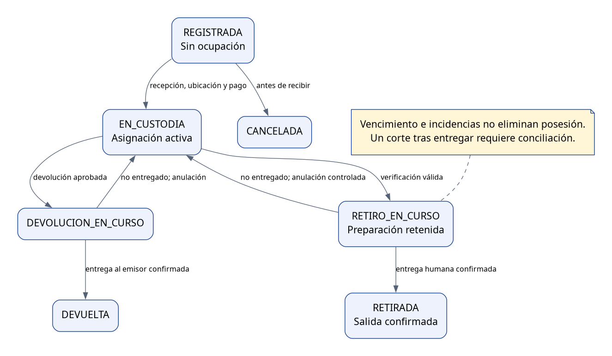
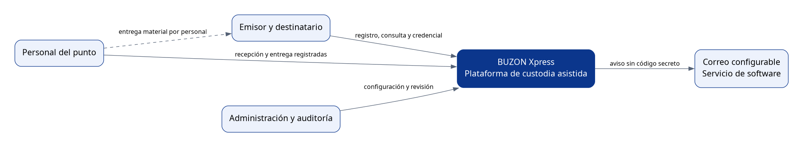
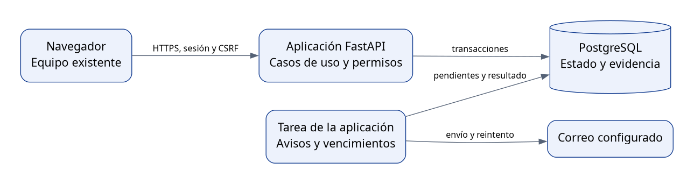
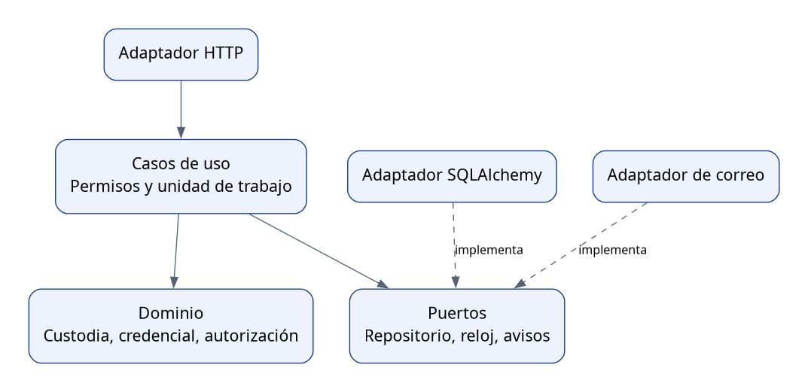
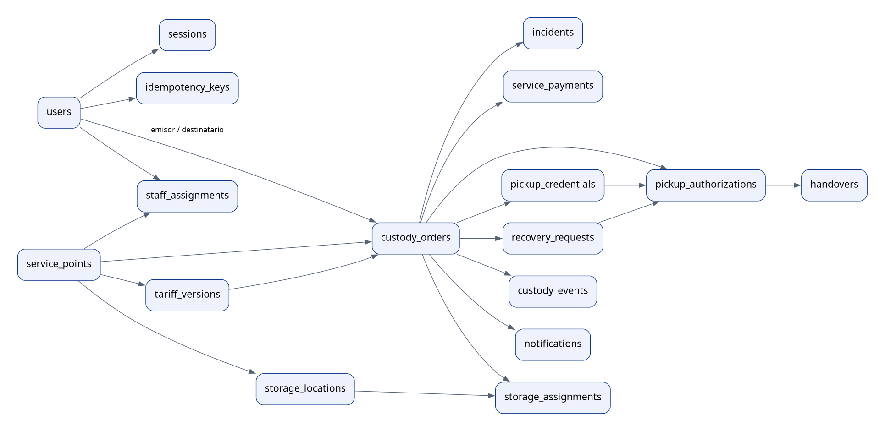
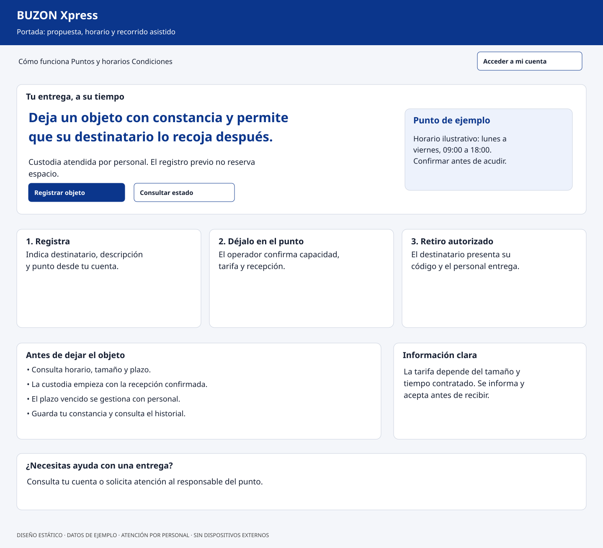
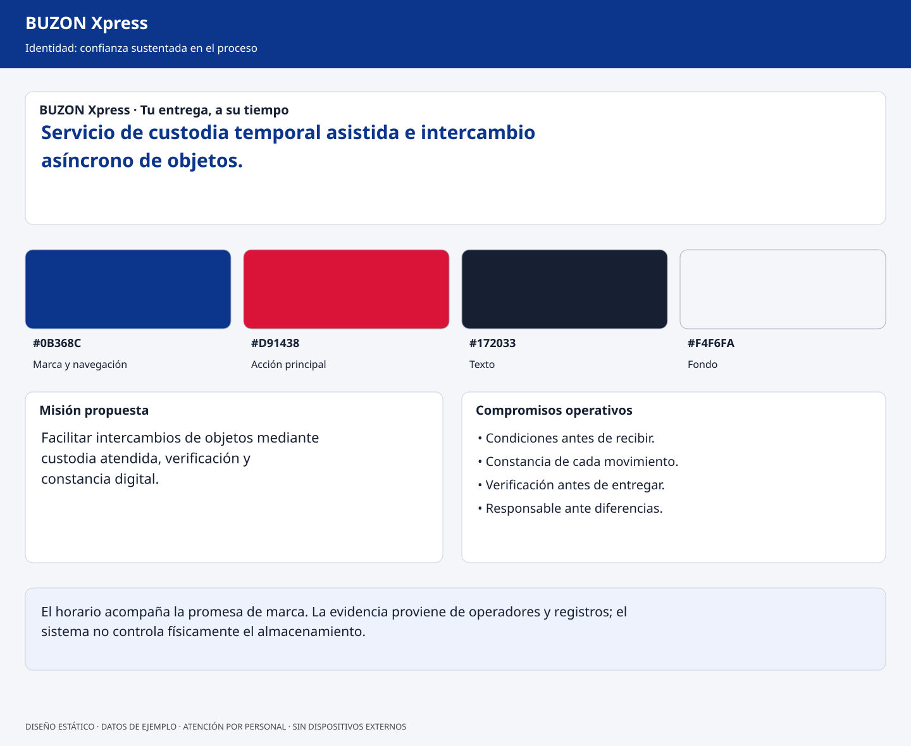
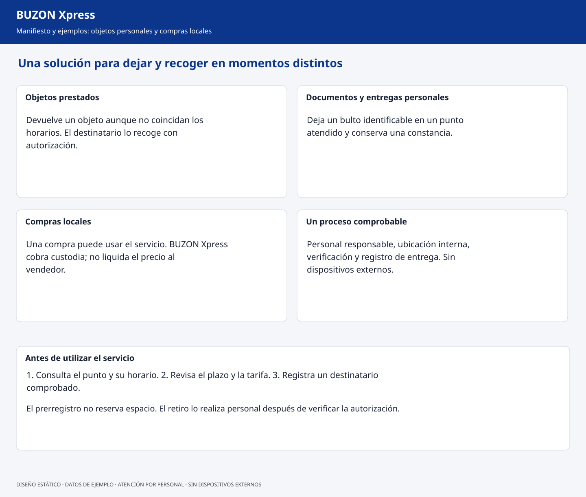
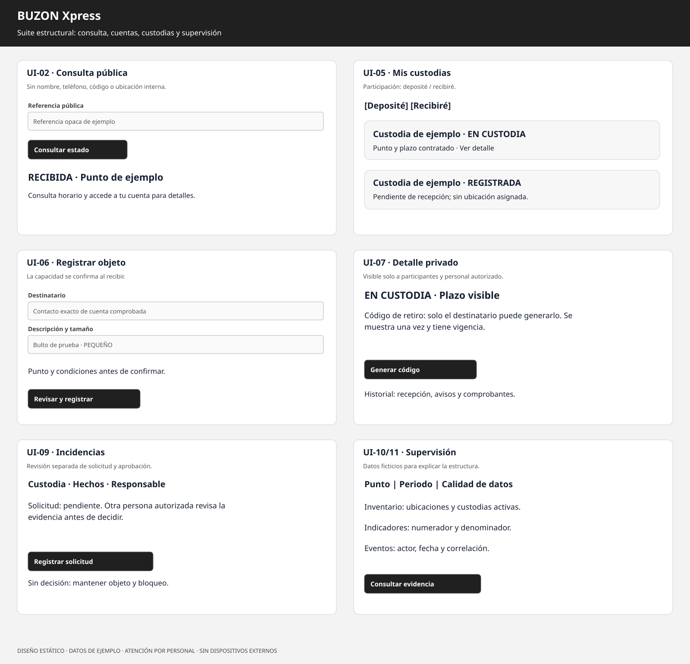
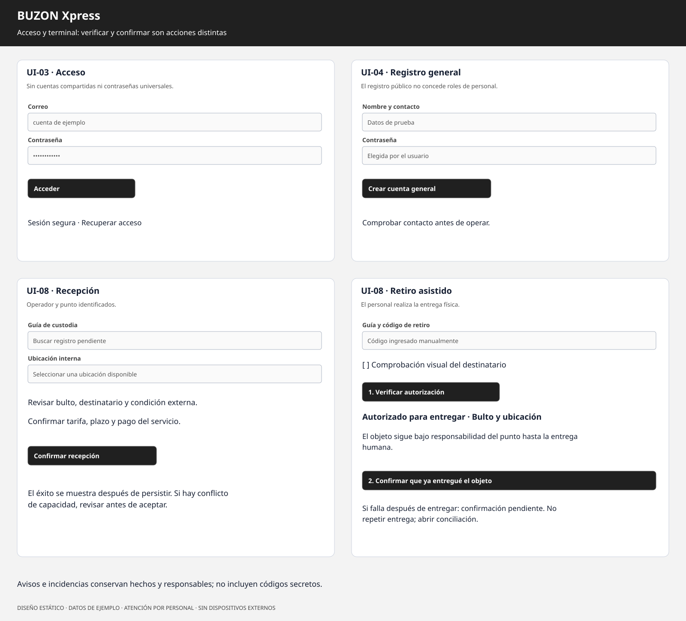

Custodia temporal asistida e intercambio asíncrono de objetos
26 de octubre de 2026 · La Paz, Bolivia · Versión documental 1.0
La plataforma utiliza equipos y espacio existentes. La recepción y la entrega son realizadas por personal; no se integra hardware externo.
Estado: diseño propuesto. Las pruebas de producto, demanda y resultados económicos están pendientes de ejecución.
Preparación y Evaluación de Proyectos · La Paz, Bolivia · 2026.
Versión documental 1.0. El emplazamiento concreto, la capacidad y los importes se determinan mediante el levantamiento del punto piloto. Este documento describe una propuesta; no presenta resultados de una empresa operativa.
La entrega de un objeto entre dos personas requiere coordinar lugar y horario. Cuando esa coordinación falla, el emisor puede posponerla, contratar un traslado o pedir a un tercero que lo guarde. BUZON Xpress propone un servicio en el que personal de un punto recibe un objeto, registra su custodia y lo entrega posteriormente a un destinatario autorizado.
La plataforma organiza el proceso y conserva evidencia digital. La recepción y la entrega son actividades humanas; el espacio de almacenamiento permanece bajo responsabilidad del personal. Se utilizan equipos y espacio disponibles, sin incorporar hardware externo ni lockers inteligentes.
El perfil antecedente identifica dificultades de coordinación, resguardo informal y falta de trazabilidad. La documentación del proyecto existente aporta una base web orientada al comercio social. En su código se observaron modelos de paquetes y puntos, una API y pantallas de demostración, además de limitaciones de autenticación e integración.
Estos antecedentes justifican investigar el problema, pero no prueban su magnitud local ni la disposición a pagar. El diagnóstico propuesto combina entrevistas sobre intercambios recientes, observación autorizada de un punto y un ensayo controlado. Se contrastan consignas, comercios receptores, encuentros personales y mensajería, sin afirmar que tales servicios estén ausentes o sean inferiores.
Problema central: dificultad para concretar intercambios de objetos sin coincidencia horaria, con una constancia suficiente de recepción, custodia y entrega.
| Causas a investigar | Manifestación | Efecto posible |
|---|---|---|
| Agendas incompatibles. | Encuentros reprogramados o esperas. | Tiempo y coordinación adicionales. |
| Resguardo sin registro. | Terceros reciben objetos sin constancia uniforme. | Incertidumbre sobre responsable y destinatario. |
| Verificación insuficiente. | Se entrega por nombre o teléfono sin autorización comprobable. | Error de entrega y dificultad de reconstrucción. |
| Falta de información de disponibilidad. | No se conoce si el objeto llegó o sigue guardado. | Viajes innecesarios y consultas repetidas. |
Pregunta del proyecto: ¿cómo diseñar y evaluar una plataforma y un procedimiento de custodia asistida que permitan recibir y entregar objetos en momentos distintos, con autorización y trazabilidad, usando recursos existentes?
La propuesta separa temporalmente al emisor del destinatario y establece responsabilidades durante la custodia. Su valor esperado es reducir incertidumbre, errores y esfuerzo de coordinación. La validación debe comprobar si ese valor resulta suficiente frente al costo, la distancia al punto y su horario.
El enfoque asistido hace viable investigar la solución con infraestructura disponible. La seguridad depende de controles digitales, organización del espacio y actuación del personal; no se promete protección física automática ni eliminación de pérdidas.
Objetivo general: desarrollar y evaluar un prototipo de plataforma web para gestionar la custodia temporal asistida y el intercambio asíncrono de objetos, mediante identificación de usuarios, autorización de entrega, registro de operaciones y notificaciones, utilizando equipos y espacio existentes.
| ID | Objetivo específico | Entregable y comprobación |
|---|---|---|
| OE-01 | Analizar necesidades y requisitos funcionales, operativos y de seguridad. | Diagnóstico, requisitos y validación de escenarios con usuarios y operador. |
| OE-02 | Diseñar el proceso de atención, la organización del punto y la arquitectura del software. | Flujo operativo, distribución funcional y modelos de arquitectura y datos. |
| OE-03 | Desarrollar identificación y autorización digital de las entregas. | Autenticación, permisos y credenciales con pruebas de rechazo y uso único. |
| OE-04 | Implementar registro, recepción, ubicación, retiro y devolución. | Ciclo persistido y ensayo de inventario con objetos de prueba. |
| OE-05 | Integrar notificaciones e historial para usuarios y personal. | Avisos en plataforma, correo configurable y eventos asociados al actor. |
| OE-06 | Evaluar funcionamiento, usabilidad, seguridad y viabilidad inicial. | Protocolo, resultados del piloto y evaluación de demanda, costos y capacidad. |
Se propone un punto piloto en el área urbana de La Paz, sujeto a disponibilidad de un espacio autorizado por su responsable. La cantidad de ubicaciones se levanta físicamente; no se asume capacidad nacional.
Se gestionan objetos admitidos por tamaño y condiciones acordadas del punto. Una operación representa un bulto identificable, un emisor, un destinatario y una ubicación exclusiva mientras se encuentra bajo custodia. El registro previo no reserva espacio; la aceptación se confirma al recibir el objeto.
Se incluyen cuentas generales, gestión de puntos, recepción, autorización, entrega, devolución asistida, cobro del servicio, avisos, incidencias, auditoría y reportes. Quedan fuera transporte, compra o venta de productos, cobro contra entrega a favor de terceros, liquidaciones bancarias, consolidación multitienda y dispositivos automatizados.
La atención ocurre dentro del horario publicado. Una cuenta o código no acredita por sí solo identidad civil; el procedimiento establece comprobación visual y registro mínimo, sin almacenar imágenes documentales en el prototipo.
El emisor y el destinatario tienen cuentas activas y contacto comprobado por correo o verificación presencial documentada. El emisor registra el objeto y selecciona al destinatario. El operador verifica admisibilidad, disponibilidad y tarifa, cobra el servicio y registra la recepción y ubicación en una transacción.
El destinatario consulta su bandeja y genera una credencial temporal. En el punto presenta el código; el operador verifica la operación y al destinatario. El sistema autoriza la entrega y conserva una operación en curso. Después de entregar físicamente el bulto, el operador confirma el retiro, consume la autorización y libera la ubicación. Las diferencias o cortes posteriores a una entrega se gestionan como incidencias.
El plazo vencido no libera una ubicación ocupada ni autoriza disposición del objeto. Se informa al usuario y se tramita prórroga o devolución. La política exacta de permanencia se establece antes del piloto.
La investigación es exploratoria y aplicada. Se proponen diez entrevistas basadas en episodios recientes y observación de sesiones de atención; es una muestra por conveniencia, sin representatividad estadística. La evaluación operativa propuesta comprende treinta ciclos con objetos de prueba y cinco sesiones de usabilidad. Estas cantidades son un diseño inicial que puede ampliarse según resultados.
La ingeniería se organiza en iteraciones con requisitos, modelos, implementación y pruebas de un flujo completo. Pressman y Maxim, Cockburn, Larman, Evans, Martin, Fowler y Patton aportan herramientas concretas. La justificación metodológica explica su selección y límites.
La evaluación distingue disponibilidad técnica de recursos, factibilidad operativa del personal y factibilidad económica del servicio. Se levantan tiempos por recepción y retiro, permanencia media, ocupación, costos fijos y variables y precio aceptable.
No se fijan ingresos o rentabilidad sin datos. El modelo económico ofrece fórmulas, sensibilidad y una plantilla de captura. Las condiciones del emplazamiento y del servicio requieren investigación específica antes de atención al público; este perfil no emite conclusiones jurídicas.
Se plantean seis iteraciones de una semana como referencia de planificación: descubrimiento y alcance; identidad y contratos; registro y recepción; autorización y retiro; recuperación y comunicaciones; ensayo y evaluación. La duración es una estimación, no un compromiso sin conocer capacidad del equipo. El plan define dependencias y entregables.
Se espera obtener un prototipo que registre quién recibió, dónde se almacenó, quién autorizó y quién entregó cada objeto. La aceptación requiere que usuarios ajenos sean rechazados, que una ubicación no se asigne dos veces y que el historial permita reconstruir una operación y sus incidencias.
El estudio permitirá decidir si el servicio merece continuar, ajustar horario o segmento, modificar tarifas o detenerse. La conclusión actual es de diseño: existe una formulación coherente con la restricción. La eficacia, demanda y rentabilidad permanecen pendientes de medición.
La bibliografía verificada y el archivo del perfil original completan los antecedentes. Se adjuntan requisitos, modelos, wireframes, manual, plan de pruebas e instrumentos de investigación mediante el índice del proyecto.
Estado: diseño documental. Autoridad de alcance: instrucción del usuario del 26 de octubre de 2026, que excluye lockers inteligentes y hardware externo.
| ID | Decisión | Motivo y consecuencia |
|---|---|---|
| D-01 | Custodia asistida por operador. | El control digital autoriza una entrega humana; el sistema no bloquea ni abre un espacio físico. |
| D-02 | Equipos y espacio existentes. | No hay requerimiento de compra o integración de dispositivos. Se ingresa el código desde un teclado o pantalla disponibles. |
| D-03 | Conservar el intercambio asíncrono. | Emisor y destinatario no necesitan coincidir, pero ambos respetan los horarios del punto. |
| D-04 | Usuario general con participación por operación. | No es obligatorio tener una tienda, ser vendedor ni registrar un precio de producto. |
| D-05 | Una custodia activa por ubicación interna. | Simplifica inventario y evita mezcla de objetos en la primera versión; la capacidad real se levanta en el punto. |
| D-06 | Registro previo sin reserva de capacidad. | La ubicación se asigna al recibir físicamente el objeto. La pantalla lo explica; no promete espacio por prerregistrar. |
| D-07 | Servicio en un solo punto por operación. | No se incluye transporte entre puntos ni traslado interdepartamental. |
| D-08 | Cobro del servicio de custodia al depositar. | La tarifa cubre un plazo contratado; la prórroga se gestiona antes del retiro. No hay intermediación de ventas, COD ni liquidaciones a comerciantes. |
| D-09 | Acciones de inventario con conexión. | Sin servidor no se autorizan recepciones, retiros, devoluciones ni cobros operativos; un incidente posterior a una entrega real se reconcilia. |
| D-10 | Avisos en plataforma; correo como canal de software. | No se requiere WhatsApp, SMS, un teléfono conectado o equipos de terceros. El correo depende de configurar un servicio SMTP y se prueba antes del piloto. |
| D-11 | Un código de retiro no demuestra identidad civil. | Autoriza una operación concreta. La comprobación visual del destinatario y la actuación del personal forman parte del procedimiento. |
| D-12 | Auditoría con estado relacional actual. | Una tabla de eventos no convierte al sistema en Event Sourcing; tampoco es inalterable frente a un administrador de base de datos. |
La prohibición de hardware no se interpreta como prohibición de software de correo o alojamiento. El piloto puede ejecutarse en los equipos existentes; el modelo de despliegue se decide según disponibilidad. No se impone un proveedor contratado.
| Intención original | Adaptación vigente |
|---|---|
| Resolver incompatibilidad de horarios. | Depósito y retiro separados, dentro del horario del punto. |
| Resguardo formal y constancia. | Operador responsable, ubicación restringida al personal, recepción y comprobante digitales. |
| Arquitectura física y tecnológica de lockers. | Diseño del proceso y distribución funcional del espacio existente, más arquitectura web. |
| Control de acceso a compartimentos. | Autenticación, permisos sobre custodias y autorización de entrega al operador. |
| Registro y seguimiento. | Historial de recepción, verificación, entrega, devolución, cobros e incidencias. |
| Notificaciones. | Bandeja interna y correo con registro de intentos. |
| Validación del prototipo. | Pruebas de software y ensayo supervisado del servicio asistido. |
El título y los objetivos se reformulan porque la nueva solución no puede afirmar que implementa lockers inteligentes. La autorización del usuario ya establece este cambio; no se deja condicionado a otra aprobación.
| Archivo del proyecto actual | Equivalente vigente | Tratamiento |
|---|---|---|
README.md |
README | Índice, alcance y estado documental. |
backend/README.md, backend/alembic/README y configuración SQL/Compose |
Guía técnica | Entornos, configuración, migraciones y recuperación propuestos; no un despliegue ya ejecutado. |
docs/negocio/BuzonExpress_Formulacion_Negocio.md |
Formulación | JTBD, lienzos, ERAC, cadena de valor y adopción aplicados a custodia. |
docs/ingenieria/BuzonExpress_Especificacion_Software.md |
Especificación | Requisitos, FURPS+, límites, historias y criterios verificables. |
docs/ingenieria/01_modelado_analisis_pressman.md |
Análisis | Escenarios, clases, CRC, estados, secuencia y flujos. |
docs/ingenieria/02_modelado_diseno_ui.md |
UI | Reglas de Mandel, navegación y evaluación de interfaces. |
docs/ingenieria/03_modelado_datos_arquitectura.md |
Datos y arquitectura | Entidades, diccionario, integridad, componentes y concurrencia. |
docs/ingenieria/04_propuestas_wireframes_identidad.md |
Identidad | Tres alternativas comparadas y selección razonada. |
docs/ingenieria/05_wireframes_estructurales_bn.md |
Wireframes estructurales | Pantallas públicas, de usuario, operador y administrador. |
docs/ingenieria/06_casos_de_uso_alto_nivel_y_expandidos.md |
Casos de uso | Catálogo y doce casos expandidos. |
docs/wireframes/landing_page_wireframe.jpg |
Landing SVG y PNG | Flujo asistido, horarios y alcance. |
docs/wireframes/corporate_identity_mockup.jpg |
Identidad SVG y PNG | Confianza apoyada en procesos comprobables. |
docs/wireframes/manifesto_grid_mockup.jpg |
Manifiesto SVG y PNG | Políticas de custodia y comunicación. |
docs/wireframes/bw_wireframes_suite.jpg |
Suite SVG y PNG | Prerregistro, consultas, recepción y administración. |
docs/wireframes/bw_auth_terminal_wireframes.jpg |
Acceso y terminal SVG y PNG | Sesión, código y confirmación de entrega humana. |
Se añaden perfil, revisión de metodologías, bibliografía, demanda y costos, manual operativo, API, decisiones, plan, trazabilidad y pruebas. Los antecedentes originales se guardan fuera del árbol normativo docs/.
React, TypeScript, FastAPI, PostgreSQL y la separación por capas son una base viable. Se reutilizan componentes visuales e ideas de puntos, usuarios y registro de eventos tras revisar sus contratos. Se reemplazan autenticación de demostración, respuestas públicas con PIN, métricas simuladas y acciones locales presentadas como operaciones reales.
El modelo comercial de seller_id, COD y consolidación no se traslada automáticamente. La migración debe identificar emisores y destinatarios, inventariar objetos físicamente y conservar antecedentes. No se importan contraseñas locales ni PIN expuestos. Ningún documento de esta carpeta acredita que esos cambios ya estén implementados.
Se inventariaron los ocho documentos existentes y sus cinco láminas; se contrastaron con el perfil y la restricción de hardware. Se verificaron autorías y conceptos con fuentes primarias: autores, editoriales, instituciones responsables de normas y artículos originales. La bibliografía identifica qué material se consultó: ficha, índice, extracto o recurso público. No se declara lectura íntegra de libros comerciales ni cumplimiento certificado de normas.
Los marcos se emplean para tomar decisiones y producir evidencia. Los siguientes ejemplos son aplicaciones originales al proyecto, no afirmaciones textuales de sus autores.
| Marco y obra | Idea utilizada | Aplicación a BUZON Xpress | Evidencia que exige |
|---|---|---|---|
| Osterwalder y Pigneur, Business Model Generation [B01]. | Explicitar cómo se crea, entrega y captura valor mediante un modelo de negocio. | Separar usuario beneficiario, pagador, punto anfitrión y operador; relacionar tarifa con recursos y actividades. | Lienzo con hipótesis y prueba de costos/ingresos. |
| Maurya, Running Lean, 3.ª ed. [B02]. | Formular y probar supuestos de un negocio mediante ciclos de aprendizaje. | Priorizar frecuencia del problema y disposición a pagar antes de ampliar funcionalidades. | Entrevistas, prueba de uso y decisiones de continuar o ajustar. |
| Christensen, Hall, Dillon y Duncan, Competing Against Luck [B03]. | Entender el progreso que busca la persona en sus circunstancias. | “Necesito dejar un objeto hoy para que otra persona lo recoja cuando pueda”. Investigar alternativas que ya usa y razones de cambio. | Relatos de episodios reales, sin confundir preferencias declaradas con demanda. |
| Kim y Mauborgne, Blue Ocean Strategy y ERAC [B04]. | Reconsiderar factores de valor mediante eliminar, reducir, aumentar y crear. | Eliminar coordinación simultánea, reducir incertidumbre, aumentar constancia y crear custodia accesible por tiempo. | Comparación observada; no afirmar mercado sin competencia. |
| Porter, Competitive Advantage [B05]. | Analizar las actividades que producen valor y costo. | Descomponer recepción, registro, almacenamiento, verificación y entrega; estimar trabajo humano por operación. | Tiempos observados, costos y puntos de error. |
| Moore, Crossing the Chasm [B06]. | Focalizar adopción en un segmento y una solución completa para su caso de uso. | Empezar en un punto y segmento accesible para un piloto. La elección de usuarios locales se valida; no presume expansión nacional. | Usuarios repetidos, servicio completo y referencias del piloto. |
Los dos lienzos cumplen propósitos distintos: Business Model Canvas describe socios, actividades y recursos; Lean Canvas explicita problema, solución, métricas y supuestos. Se presentan por separado en la formulación para evitar atribuir ambos instrumentos al mismo autor.
Pressman y Maxim, Software Engineering: A Practitioner's Approach, 9.ª edición [I01], organizan contenidos de proceso, requisitos, diseño, calidad y gestión. Aquí se aplica una secuencia iterativa: comprender el servicio, modelar escenarios, diseñar componentes, verificar y revisar. Cada entrega atraviesa esas actividades; no se toma el índice del libro como un proceso obligatorio.
Cockburn, Writing Effective Use Cases [I02], aporta la descripción de metas, actores, alcance y escenarios. El catálogo emplea un nivel de resumen para ordenar capacidades y un nivel de objetivo de usuario para describir la interacción. Los casos incluyen garantías y extensiones; no se limitan a diagramas.
Larman, Applying UML and Patterns, 3.ª edición [I03], sustenta el uso de modelos de dominio, responsabilidades y desarrollo iterativo. Se aplica GRASP: Custodia conoce sus transiciones; Autorización conoce su vigencia; el servicio de aplicación coordina la recepción; la interfaz no decide permisos. Mermaid se utiliza como notación de documentación. Un grafo de actores se etiqueta como vista de interacción y no como diagrama UML formal de casos de uso.
Sommerville, Software Engineering, 10.ª edición [I04], aporta una perspectiva complementaria sobre ingeniería de requisitos, confiabilidad y sistemas. Se usa para distinguir una validación de software de una validación del servicio humano: una respuesta HTTP correcta no prueba que el operador entregó el objeto correcto.
FURPS+ [Q01] sirve para clasificar requisitos funcionales, usabilidad, confiabilidad, desempeño, soporte y restricciones. Es una taxonomía, no un proceso completo ni una norma equivalente a ISO/IEC/IEEE 29148. La ficha pública de esta última [Q02] se usa como referencia del campo de ingeniería de requisitos; no se afirma que se haya aplicado íntegramente una norma de acceso restringido.
Evans, Domain-Driven Design [A01], y su referencia pública [A02] orientan el vocabulario de custodia, recepción, ubicación y entrega. Se reconocen límites entre custodia, identidad, cobros del servicio y comunicaciones. En el primer producto son módulos de una aplicación; no se deduce que cada contexto necesite un servidor independiente.
Martin, Clean Architecture y su artículo [A03], justifican que las reglas de negocio no dependan del framework o del ORM. Se documentan puertos de repositorio, reloj, verificador y mensajería. El nombre de una carpeta no demuestra por sí mismo que esta separación exista en una implementación.
Fowler, Patterns of Enterprise Application Architecture [A04], aporta Unit of Work y control de concurrencia. Se propone una transacción por operación digital, comparando versiones y bloqueando la ubicación al asignar. “Optimistic Offline Lock” describe conflictos de transacciones de negocio; su nombre no garantiza funcionamiento sin conexión a internet.
Codd [D01] y Date [D02] sustentan el uso de relaciones, claves, dependencias e integridad. Se aplican al separar custodias de asignaciones, tarifas de cobros y credenciales de consultas públicas. Se documentan dependencias funcionales principales; no se declara BCNF del modelo completo sin demostración. Las copias históricas de precio en una custodia son una decisión deliberada de trazabilidad.
Brown y el modelo C4 [A05] permiten comunicar contexto, aplicaciones y componentes. Se incluyen vistas de contexto, contenedores y componentes porque responden preguntas diferentes; un contenedor C4 no es necesariamente un contenedor Docker.
Mandel, The Elements of User Interface Design [U01], agrupa sus reglas en control del usuario, reducción de memoria y consistencia. Se traducen en cancelación antes de recibir, instrucciones visibles y nombres de estado estables. La seguridad no se sacrifica para reducir pasos. El número de tres etapas de una landing es una decisión de comunicación; no se presenta como una consecuencia de la llamada ley de Miller.
Patton, User Story Mapping [P01], se aplica para recorrer la experiencia completa y cortar entregas horizontales: primero un depósito y retiro coherentes, luego recuperación y evaluación. Un panel muy elaborado sin persistencia no constituye una entrega del servicio.
Humble y Farley, Continuous Delivery [P02], inspiran compilación, pruebas, migraciones reproducibles y recuperación. Forsgren, Humble y Kim, Accelerate [P03], aportan el interés por medir desempeño de entrega y estabilidad. Las métricas de desarrollo se mantienen separadas de tiempo de atención y demanda. No se trasladan umbrales de empresas estudiadas como garantías del piloto.
OWASP [S01–S03] y WCAG 2.2 [U02] complementan las obras históricas con guías públicas sobre autenticación, autorización y accesibilidad. Se seleccionan controles concretos y se prueban; esta documentación no declara certificación de seguridad ni conformidad integral de accesibilidad.
Se trabaja con un tablero de pendientes, trabajo en curso y terminado. No se declara Scrum: no se han establecido sus roles, eventos ni compromisos. Una iteración finaliza con una demostración y evidencia de aceptación, no por haber transcurrido una semana.
El resultado metodológico se verifica siguiendo requisito → caso de uso → datos/API/UI → prueba, no contando cuántos autores se mencionan.
Consulta: 26 de octubre de 2026. Se enlazan fuentes primarias y fichas editoriales. Las fechas de publicación comercial y copyright pueden diferir; se indica esa diferencia cuando la ficha la muestra. Los conceptos se sintetizan y se aplican al proyecto con elaboración propia; no se incluyen capítulos completos de libros comerciales.
| ID | Obra o recurso | Fuente consultada y alcance |
|---|---|---|
| B01 | Osterwalder, A. y Pigneur, Y. (2010). Business Model Generation. Wiley. | Strategyzer: libro y vista previa. Descripción del modelo y recurso de vista previa. |
| B02 | Maurya, A. (2022). Running Lean, 3.ª ed. O'Reilly. | Ficha, índice y descripción. Página de copyright. |
| B03 | Christensen, C. M., Hall, T., Dillon, K. y Duncan, D. S. (2016). Competing Against Luck: The Story of Innovation and Customer Choice. HarperBusiness. | Christensen Institute. Autoría y explicación pública de Jobs to Be Done. |
| B04 | Kim, W. C. y Mauborgne, R. (2015). Blue Ocean Strategy, edición ampliada. Harvard Business Review Press. | Marco de cuatro acciones y ERAC, recursos oficiales de los autores. |
| B05 | Porter, M. E. (1985). Competitive Advantage. Free Press. | Ficha editorial de una reedición y cadena de valor, Harvard. |
| B06 | Moore, G. A. Crossing the Chasm, 3.ª ed. HarperBusiness. | Página del autor y recursos. Enfoque de adopción y segmentación; no se consultó el texto completo. |
| B07 | Stalk, G. y Hout, T. M. (1990). Competing Against Time. Free Press. | Ficha editorial. Se usa para corregir la atribución del antecedente, no como fuente de JTBD. |
| ID | Obra o recurso | Fuente consultada y alcance |
|---|---|---|
| I01 | Pressman, R. S. y Maxim, B. R. Software Engineering: A Practitioner's Approach, 9.ª ed. McGraw Hill. | Ficha e índice editorial. Se identifica edición e ISBN 9781259872976; las ediciones regionales presentan fechas diferentes. |
| I02 | Cockburn, A. (publicación 2000; copyright 2001). Writing Effective Use Cases. Addison-Wesley. | Ficha e introducción y extracto del autor sobre alcance. |
| I03 | Larman, C. (publicación 2004; copyright 2005). Applying UML and Patterns, 3.ª ed. Pearson. | Ficha, índice y descripción. Responsabilidades, modelos y desarrollo iterativo. |
| I04 | Sommerville, I. (2015). Software Engineering, 10.ª ed. Pearson. | Sitio del autor y ficha editorial. Se distingue la edición histórica de posteriores formatos comerciales. |
| A01 | Evans, E. (publicación 2003; copyright 2004). Domain-Driven Design: Tackling Complexity in the Heart of Software. Addison-Wesley. | Ficha editorial. |
| A02 | Evans, E. (2015). Domain-Driven Design Reference: Definitions and Pattern Summaries. | Recurso del autor y referencia pública. Complemento público para el vocabulario y patrones. |
| A03 | Martin, R. C. (publicación 2017; copyright 2018). Clean Architecture. Pearson. | Ficha editorial y artículo del autor, 2012. Dependencias hacia políticas internas. |
| A04 | Fowler, M. (2002). Patterns of Enterprise Application Architecture. Addison-Wesley. | Catálogo del autor: Unit of Work y Optimistic Offline Lock. |
| A05 | Brown, S. The C4 Model. | Descripción oficial de diagramas y notación. Recurso web, sin fecha editorial única. |
| D01 | Codd, E. F. (1970). “A Relational Model of Data for Large Shared Data Banks”. Communications of the ACM, 13(6), 377–387. DOI 10.1145/362384.362685. | Registro y resumen de IBM Research. El acceso directo a ACM devolvió 403; no se declara revisión integral del artículo. |
| D02 | Date, C. J. (publicación 2003; copyright 2004). An Introduction to Database Systems, 8.ª ed. Pearson. | Ficha editorial. Base conceptual, sin prueba automática de normalización del diseño. |
| ID | Obra o recurso | Fuente consultada y alcance |
|---|---|---|
| U01 | Mandel, T. (1997). The Elements of User Interface Design. Wiley. | Reglas publicadas por el autor y capítulo público. |
| U02 | W3C. Web Content Accessibility Guidelines 2.2. | Recomendación. Referencia para contraste, teclado, etiquetas y mensajes; no se afirma conformidad integral. |
| P01 | Patton, J. (2014). User Story Mapping. O'Reilly. | Recursos del autor y ficha editorial. |
| P02 | Humble, J. y Farley, D. (2010). Continuous Delivery. Addison-Wesley. | Ficha editorial y recurso de sus autores. |
| P03 | Forsgren, N., Humble, J. y Kim, G. (2018). Accelerate. IT Revolution. | Ficha y descripción editorial. Desempeño de entrega de software y estabilidad, sin trasladar umbrales a este piloto. |
| Q01 | IBM Rational. Material público sobre requisitos y FURPS+. | Guía de RequisitePro. Se utiliza la clasificación, sin atribuirla como creación de IEEE. |
| Q02 | ISO/IEC/IEEE 29148:2018. Requirements engineering. | Ficha oficial. Se verificó alcance bibliográfico; no se accedió al texto completo ni se declara cumplimiento certificado. |
| S01 | OWASP. Authentication Cheat Sheet. | Guía oficial. |
| S02 | OWASP. Transaction Authorization Cheat Sheet. | Guía oficial. |
| S03 | OWASP. Password Storage Cheat Sheet. | Guía oficial. |
| T01 | OpenAPI Initiative. OpenAPI Specification 3.1.0. | Especificación. Formato elegido para el contrato de diseño, sin afirmar que sea la versión más reciente. |
/home/oswi/Proyectos/Dev/buzon-xpress/, revisión estática del 26 de octubre de 2026.Las referencias a BID, CEPAL, FEPE, Fundación Milenio y estadísticas de última milla contenidas en el perfil original no se trasladan como hechos verificados. El nuevo perfil plantea investigación local y no reproduce porcentajes ni conclusiones normativas sin una fuente primaria comprobada. Las cuestiones jurídicas del emplazamiento y del servicio quedan como trabajo de investigación, sin emitir aquí un dictamen legal.
Estado: hipótesis de negocio y diseño del servicio. Referentes: B01–B06 de la bibliografía. Las aplicaciones y decisiones de este documento son elaboración del proyecto.
BUZON Xpress ofrece custodia temporal asistida para intercambios de objetos entre personas. Un emisor deja un bulto en un punto atendido y su destinatario lo recoge después de una verificación. El ingreso previsto proviene del servicio de custodia, según tamaño y plazo contratado.
Propuesta de valor: “Deja un objeto con constancia y permite que su destinatario lo recoja después, dentro del horario del punto”.
La capacidad del espacio y la disponibilidad del personal son límites del servicio. El software ayuda a cumplir el procedimiento, conservar evidencia y reducir errores. La conveniencia, confianza y disposición a pagar deben comprobarse con usuarios del entorno.
| Circunstancia | Progreso buscado | Alternativa a investigar | Criterio de contratación |
|---|---|---|---|
| Dos personas tienen horarios distintos. | Completar el intercambio sin esperar juntas. | Reprogramar encuentro o pedir ayuda a un conocido. | Cercanía y horario conveniente. |
| Se entrega un objeto prestado o documentos. | Saber quién recibió y quién retiró. | Portería o comercio receptor. | Constancia y verificación comprensibles. |
| Se vende ocasionalmente un producto. | Dejarlo disponible sin esperar al comprador. | Entrega personal o mensajería. | Costo total y facilidad para ambas partes. |
| Un comercio presta espacio al servicio. | Organizar la recepción sin perder control. | Cuaderno o planilla propia. | Carga operativa y remuneración compatibles. |
La entrevista indaga la última ocasión real: qué ocurrió, cómo se resolvió, cuánto tiempo y dinero demandó y qué salió mal. Una respuesta favorable a una idea hipotética no se cuenta como contratación ni intención de uso confirmada.
| Eliminar | Reducir | Aumentar | Crear |
|---|---|---|---|
| Necesidad de que emisor y receptor coincidan. | Consultas repetidas sobre llegada y retiro. | Constancia de custodia y claridad del responsable. | Servicio por plazo en un punto atendido. |
| Registro comercial obligatorio para intercambios personales. | Dependencia de mensajes informales dispersos. | Información de horario, tarifa y condiciones. | Autorización digital ligada a una operación. |
No se declara una ventaja patentada ni una ausencia de competidores. La comparación se levantará con una ficha común: disponibilidad geográfica, horario, plazo, costo total para un mismo objeto, comprobante, proceso de retiro y atención de incidencias. Las columnas de competidores permanecerán sin puntuación hasta obtener evidencia fechada.
| Bloque | Hipótesis de diseño |
|---|---|
| Segmentos | Personas del entorno del punto que realizan intercambios ocasionales; comerciantes pequeños como segmento adicional. |
| Propuesta de valor | Custodia con registro y entrega posterior autorizada, accesible desde un navegador. |
| Canales | Punto anfitrión, sitio web y recomendaciones del piloto; correo para comunicaciones. |
| Relaciones | Atención presencial, consulta digital y gestión de incidencias con responsable identificable. |
| Ingresos | Tarifa por tamaño y bloque temporal; prórroga acordada. El emisor paga el plazo inicial al depositar. |
| Recursos | Personal, espacio y equipos existentes, plataforma y procedimientos documentados. |
| Actividades | Recepción, organización, verificación, entrega, conciliación de inventario y soporte. |
| Socios | Responsable del punto y posibles proveedores de alojamiento o correo, si se requieren. |
| Costos | Tiempo del personal, costo de oportunidad del espacio, desarrollo, soporte, conectividad y servicios digitales. |
“Recursos existentes” no significa costo económico cero. La evaluación registra uso, capacidad y costo de oportunidad aunque no exista una compra inicial.
| Bloque | Hipótesis comprobable |
|---|---|
| Problema | La coordinación temporal dificulta ciertos intercambios y genera incertidumbre. |
| Segmento inicial | Usuarios accesibles de un solo punto; el segmento se selecciona con evidencia del diagnóstico. |
| Propuesta única | Entrega en otro momento con constancia y responsable. |
| Solución inicial | Prerregistro, recepción atendida, ubicación, aviso, código y comprobante de retiro. |
| Canales | Invitación presencial y comunicación digital a participantes que consientan. |
| Ingresos | Tarifa del servicio; no cobro del precio del objeto ni comisiones de venta. |
| Costos | Costos fijos del punto y software, más costo variable por operación y permanencia. |
| Métricas | Usos completados, repetición, ocupación, permanencia, errores, tiempo de atención y contribución. |
| Ventaja difícil de copiar | Todavía no demostrada. La confianza y acuerdos del punto podrían desarrollarse, pero no se presentan como activos consolidados. |
| Actividad | Valor que entrega | Costo o falla relevante | Control |
|---|---|---|---|
| Admisión | Condiciones claras antes de aceptar. | Recepción de un objeto no admisible. | Lista y comprobación visual. |
| Recepción | Constancia y comienzo del plazo. | Datos incorrectos o ubicación duplicada. | Revisión y transacción única. |
| Custodia | Objeto localizable. | Ocupación prolongada o error de ubicación. | Ubicación exclusiva y conciliación diaria. |
| Verificación | Entrega autorizada. | Código compartido, vencido o de otro objeto. | Validación en servidor y comprobación del destinatario. |
| Entrega | Finalización documentada. | Fallo entre entrega humana y confirmación. | Paso explícito de confirmación y reconciliación. |
| Soporte | Resolución de diferencias. | Cambio de destinatario sin autorización. | Solicitud, evidencia y aprobación de otra persona. |
Actividades de apoyo: capacitación, control de acceso del personal, mantenimiento de software, copias de seguridad y revisión de costos. La tarifa debe cubrir tanto recepción como retiro y los casos de soporte esperables.
Las condiciones finales de admisibilidad, responsabilidad y permanencia se establecen para el emplazamiento tras la investigación correspondiente. El prototipo no anuncia seguro contratado, ausencia de riesgo o garantía de operación permanente.
Se propone comenzar con participantes cercanos a un punto y un caso de uso claro. La solución completa incluye atención, instrucciones, acceso al horario y recuperación de incidencias. Un aumento de registros sin operaciones completadas no justifica expandirse.
| Hipótesis | Experimento | Evidencia | Decisión |
|---|---|---|---|
| H-01: el problema ocurre con frecuencia relevante. | Diez entrevistas de episodios recientes. | Frecuencia, alternativas y costos declarados. | Elegir segmento o replantear necesidad. |
| H-02: el punto resulta conveniente. | Recorrido y prueba de horario con participantes. | Distancia, visitas fallidas y abandonos. | Ajustar ubicación u horario. |
| H-03: el proceso es comprensible. | Cinco sesiones con tareas. | Finalización, errores y ayuda requerida. | Corregir interfaz y procedimiento. |
| H-04: existe margen operativo. | Treinta ciclos supervisados con tiempos y permanencia. | Contribución y carga de personal. | Ajustar precio, capacidad o continuidad. |
| H-05: existe uso repetido. | Seguimiento del piloto en un plazo definido. | Segunda operación real por usuario. | Evaluar continuidad; sin inferencia nacional. |
Estos tamaños son propuestas de ensayo, no muestras representativas. Todos los resultados están pendientes. Los instrumentos y cálculos se detallan en demanda y evaluación.
Este documento ofrece instrumentos para levantar datos y fórmulas para evaluarlos. No contiene cotizaciones, precios de mercado ni resultados reales. Las celdas vacías de la plantilla de parámetros se completan con evidencia, fecha y responsable.
La unidad comercial es una custodia de un bulto por un plazo y tamaño. La unidad de capacidad es una ubicación disponible durante una hora o un día. La permanencia del objeto consume capacidad aunque no haya atención humana durante ese intervalo.
Antes de entrevistar, explicar propósito académico, uso de las respuestas y posibilidad de no responder. Registrar un identificador de participante; evitar documentos personales y datos del objeto que no sean necesarios.
Las respuestas sobre precio son exploratorias. No se registran como compra ni se multiplica su proporción por la población para proyectar demanda. Se conserva una tabla con episodio, alternativa, frecuencia, costo, fricción, objeción y observación del entrevistador.
Para cada sesión autorizada registrar inicio, fin, llegadas, recepciones, retiros, personas en espera, personal y fallas. No filmar ni fotografiar personas como requisito del estudio.
Ficha de alternativa: nombre o tipo, zona, fecha, horario publicado, objeto comparable, plazo, importe total informado, comprobante, verificación y fuente. Una característica desconocida se marca “sin dato”, nunca “no existe”. No se publican acusaciones o cifras de competidores a partir de impresiones.
| Grupo | Partida a levantar | Tratamiento |
|---|---|---|
| Inversión inicial | Diseño, desarrollo, pruebas, puesta en marcha y capacitación. | Valorar horas del equipo aunque no se paguen durante la materia. |
| Espacio existente | Área utilizada y disponibilidad por horario. | Incluir costo de oportunidad o acuerdo con el anfitrión. |
| Equipos disponibles | Tiempo y disponibilidad del equipo de cómputo existente. | Sin compra obligatoria; registrar costo de uso si corresponde. |
| Operación fija | Personal base, conectividad, soporte y alojamiento si se utilizan. | Mensualizar con evidencia. |
| Operación variable | Trabajo por custodia, comunicaciones y consumibles realmente empleados. | Medir por operación; no duplicar salarios ya incluidos como fijos. |
| Contingencias | Incidencias, devolución y recuperación técnica. | Estimar con escenarios; no afirmar frecuencia observada sin datos. |
No se presupuestan cerraduras, lectores, cámaras, controladores ni dispositivos para esta solución. Los servicios de software elegidos se cotizan antes de contratarlos; no se incluyen precios inventados.
Propuesta parametrizable: por cada tamaño existe un precio base que cubre h_base horas y una tarifa por bloque adicional de h_bloque horas. El precio se registra como versión y se conserva una copia de las reglas aceptadas en la custodia.
horas_extra = max(0, horas_contratadas - h_base)
bloques_extra = ceil(horas_extra / h_bloque)
precio_contratado = precio_base + bloques_extra * precio_bloque
Al recibir se registra el inicio y el vencimiento contratado. Una prórroga utiliza la política que consta en la versión aceptada y genera un cobro del servicio. Se informa el importe antes de confirmarlo. El código de retiro no se bloquea por un importe calculado en el navegador; el servidor comprueba la conciliación del servicio antes de autorizar la entrega.
El momento exacto de cobro, las fracciones, el redondeo monetario y el tratamiento de retrasos requieren validación comercial. Para el prototipo se diseña prepago al depositar y prórroga antes de retirar; se usan cantidades decimales y moneda BOB, sin modificar importes históricos al cambiar tarifas.
custodias_mes = Q
permanencia_media_dias = d
ubicaciones = C
dias_mes = D
ocupacion_media = (Q * d) / (C * D)
capacidad_teorica_mes = (C * D) / d
horas_atencion = Q * (min_recepcion + min_retiro + min_soporte) / 60
Estas expresiones suponen una ubicación por custodia y promedios estables. La capacidad teórica no garantiza atender picos: se inspeccionan tamaños, distribución de permanencias, horario y reservas de contingencia. Las ubicaciones bloqueadas se excluyen de la capacidad disponible durante su bloqueo.
precio_medio = ingresos_servicio / custodias_completadas
costo_variable_unitario = costos_variables / custodias_completadas
contribucion_unitaria = precio_medio - costo_variable_unitario
resultado_operativo_mes = Q * contribucion_unitaria - costos_fijos_mes
punto_equilibrio_Q = costos_fijos_mes / contribucion_unitaria
Si la contribución es cero o negativa, no existe un punto de equilibrio finito con esa estructura. Hay que revisar precio o costos. Si el volumen de equilibrio supera la capacidad factible del espacio o del personal, el diseño no es viable aunque una proyección de ingresos parezca favorable.
El análisis se ejecuta para escenarios conservador, central y favorable variando frecuencia, permanencia, contribución y ocupación. Cada escenario identifica qué datos son observados y cuáles supuestos. Se reportan también devoluciones y tiempos de recuperación.
Para una evaluación de inversión posterior puede calcularse un flujo de caja y VAN = -I0 + sum(FC_t/(1+r)^t). La tasa y los periodos deben ser coherentes y justificados; no se decide una tasa ni se ofrece una recomendación financiera con datos ausentes. La TIR no sustituye el análisis de capacidad o de supuestos.
Continuar a un piloto público requiere evidencia de necesidad, personal disponible, procedimiento practicable, resultados de autorización e inventario satisfactorios y un escenario económico consistente. Si falla una condición se registra el motivo y se ajusta el diseño; no se concluye rentabilidad porque se completó el software.
Anexos del estudio: consentimientos o constancia de participación, fichas anónimas, registro de sesiones, cotizaciones fechadas, parámetros, cálculos y acta de decisión. Los resultados están pendientes de ejecución.
Versión 1.0 · Estado: diseño propuesto. Fuente de alcance: decisiones. Marcos aplicados: I01–I04, A01–A05, Q01–Q02 y P01–P03 de la bibliografía.
La plataforma respalda la custodia de objetos en puntos atendidos. Registra recepción y ubicación, permite consultar el estado, emite credenciales de retiro y autoriza al operador a entregar. La manipulación física siempre corresponde al personal. El proyecto utiliza equipos y espacio existentes y no integra hardware externo.
El primer producto cubre una operación dentro de un solo punto. No presta transporte, ventas, COD, pagos a vendedores ni acceso físico automatizado. El prerregistro no reserva capacidad. Todas las capacidades enumeradas en esta especificación están pendientes de implementación en la nueva versión.
| Actor | Acceso autorizado |
|---|---|
| Visitante | Horarios, condiciones y seguimiento mínimo por referencia opaca. |
| Usuario | Crear custodias propias, consultar aquellas en las que participa y generar credenciales como destinatario. |
| Operador | Recibir, ubicar, verificar y entregar en puntos con asignación activa; registrar cobros e incidencias. |
| Administrador | Configurar puntos, tarifas y personal; revisar recuperaciones y aprobar excepciones sin autoaprobarse. |
| Auditor | Lectura de eventos e indicadores de puntos autorizados, sin acceso a secretos ni capacidad de entrega. |
| Servicio de tareas | Procesar avisos y vencimientos con cuenta técnica restringida. |
Emisor y destinatario son relaciones de una custodia, no tipos permanentes de persona. La identidad del actor proviene de la sesión del servidor. Un código correcto no otorga permisos administrativos.
P0 identifica lo necesario para una primera entrega consistente; P1 completa el piloto. Un requisito P1 no se presenta como existente en P0.
| ID | Prioridad | Comportamiento y criterio de aceptación | Caso |
|---|---|---|---|
| RF-01 | P0 | Registrar cuentas, comprobar contacto, iniciar y cerrar sesión; una sesión revocada deja de autorizar peticiones. | CU-01 |
| RF-02 | P0 | Aplicar permisos por participación, rol y punto; un usuario ajeno o un operador no asignado recibe rechazo. | CU-01 |
| RF-03 | P0 | Registrar una custodia con emisor, destinatario activo, punto, descripción y tamaño; genera una guía y referencia pública diferentes. | CU-02 |
| RF-04 | P0 | Recibir un objeto admisible y asignar ubicación con tarifa, pago y evento en una transacción; no hay recepción sin capacidad. | CU-03 |
| RF-05 | P0 | Mostrar inventario interno por ubicación y estado; una ubicación activa no puede asignarse a otra custodia. | CU-03 |
| RF-06 | P0 | Separar consulta privada y seguimiento público; la respuesta pública no incluye nombres, teléfonos, ubicación interna ni credenciales. | CU-04 |
| RF-07 | P0 | Emitir y revocar una credencial temporal para el destinatario autenticado; una reemisión invalida la anterior. | CU-05 |
| RF-08 | P0 | Verificar credencial en el punto, aplicar límites de intentos y crear autorización vinculada a un operador y custodia. | CU-06 |
| RF-09 | P0 | Confirmar entrega física con una autorización vigente; consume credencial y autorización, cierra asignación y registra comprobante una sola vez. | CU-07 |
| RF-10 | P1 | Devolver al emisor mediante solicitud y aprobación separadas; queda comprobante y se libera ubicación después de la entrega física. | CU-10 |
| RF-11 | P1 | Crear avisos en bandeja y, si está configurado, correo; registrar intentos, reintentos y fallo sin revertir una recepción válida. | CU-08 |
| RF-12 | P0 | Calcular y registrar cobros del servicio con tarifa versionada; el navegador no fija precios ni registra liquidaciones a terceros. | CU-09 |
| RF-13 | P1 | Detectar plazo vencido, avisar y proponer prórroga o devolución; el vencimiento no libera una ubicación ocupada. | CU-09 |
| RF-14 | P0 | Abrir incidencias y tramitar recuperación con evidencia mínima; las excepciones de entrega requieren un aprobador distinto del solicitante. | CU-10 |
| RF-15 | P0 | Registrar evento con actor, punto, custodia, transición y correlación, sin secretos; la cuenta de aplicación no puede editar o borrar eventos. | CU-12 |
| RF-16 | P1 | Administrar puntos, horarios, ubicaciones y asignaciones de personal; no desactivar silenciosamente un espacio ocupado. | CU-11 |
| RF-17 | P1 | Mostrar ocupación, permanencia, tiempos e incidencias con denominador y periodo; no presentar números simulados como mediciones. | CU-12 |
| RF-18 | P0 | Manejar reintentos e interrupciones sin duplicar recepción, cobro o entrega; el mismo identificador con otro contenido produce conflicto. | CU-07 |
| ID | Regla |
|---|---|
| RN-01 | Toda mutación sensible obtiene actor y alcance desde la sesión; los identificadores enviados por el cliente no sustituyen autorización. |
| RN-02 | Una custodia tiene como máximo una asignación activa y una ubicación como máximo una custodia activa. |
| RN-03 | REGISTRADA no ocupa ni reserva espacio. La capacidad se confirma en recepción. |
| RN-04 | Credencial propuesta: seis dígitos aleatorios, quince minutos de vigencia, cinco intentos fallidos por ventana de quince minutos y controles adicionales por cuenta y origen. Una autorización dura dos minutos; son parámetros de piloto. |
| RN-05 | La guía y el teléfono no autorizan retiro. Ninguna consulta pública o bitácora devuelve el código de retiro. |
| RN-06 | La tarifa y sus reglas se calculan en servidor; la custodia conserva versión y condiciones aceptadas. El servicio se paga al recibir y las prórrogas antes de entregar. |
| RN-07 | Un plazo vencido mantiene la custodia y su ubicación. No se elimina ni se dispone automáticamente del objeto. |
| RN-08 | Recuperaciones y devoluciones requieren solicitud, evidencia y aprobación por otra persona con permiso. |
| RN-09 | Verificar permite preparar la entrega; confirmar registra que el operador ya entregó físicamente. Son pasos separados y visibles. |
| RN-10 | Sin conexión no se inician mutaciones operativas. Una entrega humana sin confirmación digital se trata como incidencia y no se repite. |
| RN-11 | Los eventos son adiciones históricas. Una corrección crea otro evento; no reescribe el anterior. |
| RN-12 | Una incidencia bloqueante, deuda del servicio o discrepancia de inventario impide una entrega ordinaria. |
| RN-13 | Emisor y destinatario tienen cuenta activa y contacto comprobado por correo o comprobación presencial registrada. |
| RN-14 | Se registra la comprobación visual del destinatario y nombre del operador; no se exige fotografía o número completo de documento. El periodo de conservación debe definirse antes del piloto público. |
La credencial se conserva mediante un verificador HMAC con secreto de servidor, propósito y custodia asociados; el secreto del servidor no reside en la base de datos. Las contraseñas utilizan un algoritmo adaptativo apropiado y configuración verificada al implementar [S01–S03]. No se reutiliza un PIN de retiro como contraseña.
| ID | Categoría | Meta o condición verificable |
|---|---|---|
| RNF-01 | Usabilidad | Cuatro de cinco participantes completan las tareas críticas sin ayuda; registrar errores y limitaciones de la muestra. |
| RNF-02 | Desempeño | P95 de consultas privadas menor o igual a 500 ms en servidor de prueba identificado, con 10 000 custodias sintéticas y 20 usuarios concurrentes. No incluye trabajo humano ni entrega de correo. |
| RNF-03 | Seguridad | Cookies de sesión HttpOnly, Secure en HTTPS y SameSite, defensa CSRF en mutaciones, expiración, autorización y límites de intentos probados. |
| RNF-04 | Confiabilidad | En pruebas de falla de persistencia, ningún retiro o recepción queda parcialmente confirmado en la base de datos. |
| RNF-05 | Recuperación | Metas propuestas RPO 24 horas y RTO 4 horas, sujetas a un ensayo real de copia y restauración. |
| RNF-06 | Mantenibilidad | Casos de uso comprobables con repositorios en memoria; el dominio no importa FastAPI ni SQLAlchemy. |
| RNF-07 | Accesibilidad | Navegación crítica por teclado, foco visible, etiquetas y estados con texto; contraste revisado contra criterios seleccionados de WCAG 2.2. |
| RNF-08 | Observabilidad | Correlación entre petición, evento e incidencia, sin códigos, contraseñas o sesiones en logs. |
| RNF-09 | Comunicaciones | Aviso interno creado en la transacción; primer intento de correo en dos minutos en entorno controlado, con estado de error visible. |
| RNF-10 | Concurrencia | Veinte solicitudes simultáneas sobre una única ubicación disponible producen una sola asignación exitosa. |
| RNF-11 | Restricción | Uso desde navegador y equipos existentes; ningún flujo exige periférico o dispositivo externo. |
| RNF-12 | Privacidad | Vistas por participación y punto, información pública mínima y exportaciones sin secretos. Política de conservación documentada antes del piloto. |
Son metas de diseño, no resultados obtenidos ni acuerdos de nivel de servicio ya ofrecidos. FURPS+ se usa como clasificación; no implica certificación ISO.
Estados de custodia: REGISTRADA, EN_CUSTODIA, RETIRO_EN_CURSO, RETIRADA, DEVOLUCION_EN_CURSO, DEVUELTA, CANCELADA. El vencimiento se deriva de due_at y la permanencia; las incidencias son registros independientes.
Ubicaciones: DISPONIBLE, OCUPADA, BLOQUEADA, FUERA_SERVICIO. Una ubicación bloqueada puede conservar una asignación activa; no se ofrece para recibir otro objeto.
Credenciales: ACTIVA, RETENIDA, CONSUMIDA, REVOCADA. La expiración se comprueba con fecha de servidor. Autorizaciones: VALIDADA, CONSUMIDA, ANULADA; una autorización expirada no permite confirmar.
La recuperación de un retiro en curso no es una tarea automática: el operador debe indicar si entregó físicamente. Si no puede determinarse, se abre incidencia bloqueante y un administrador reconcilia con evidencia.
| Actividad | Corte P0 | Corte P1 |
|---|---|---|
| Acceder | Cuenta y sesión, permisos y contacto. | Mejoras de recuperación y auditoría de sesiones. |
| Dejar | Registrar, recibir, cobrar y ubicar. | Configuración completa del punto y tarifas. |
| Conocer estado | Consulta privada y pública mínima. | Bandeja y correo con reintentos. |
| Recoger | Credencial, verificación, entrega y comprobante. | Vencimiento y prórroga asistida. |
| Resolver | Incidencia y bloqueo para evitar repetición. | Recuperación aprobada, devolución y conciliación. |
| Aprender | Eventos de pruebas. | Indicadores del piloto y evaluación. |
US-01: como emisor, quiero dejar un objeto sin coincidir con el destinatario. Dada una custodia registrada y espacio disponible, cuando el operador recibe y registra el pago, entonces existe una asignación y un evento persistidos; si falla un paso, la recepción no se confirma digitalmente.
US-02: como destinatario, quiero recoger solo el objeto autorizado. Dada una credencial vigente y una cuenta habilitada, cuando el operador verifica y después confirma la entrega real, entonces la custodia queda retirada y la ubicación disponible; repetir la confirmación devuelve el resultado existente.
US-03: como responsable del punto, quiero reconstruir una diferencia. Dada una incidencia, cuando consulto el historial permitido, entonces identifico actor, fecha y operación sin revelar secretos ni editar el pasado.
Los contratos se definen en API y seguridad, el modelo en datos y las pantallas en UI. El plan de validación y la matriz de trazabilidad relacionan cada requisito con evidencia prevista.
La aceptación del diseño exige consistencia entre esos artefactos. La aceptación de una futura implementación exige pruebas ejecutadas y un ensayo del servicio; producir estos documentos no equivale a aprobar el software.
Estado: diseño. Referentes: Pressman y Maxim [I01], Cockburn [I02] y Larman [I03]. Definiciones normativas: especificación.
Una persona registra un objeto para otra. El operador comprueba condiciones y capacidad, cobra el servicio y registra la recepción. El destinatario obtiene una credencial y acude al punto. El operador verifica, entrega el objeto y confirma la entrega. El sistema conserva evidencia y libera la ubicación.
La frontera del software termina en el registro y autorización. Recepción material, custodia del espacio y entrega humana pertenecen al proceso del servicio; se representan como interacciones con el operador, no como sensores o actuadores implícitos.
flowchart LR
E[Emisor] --> C02[CU-02 Registrar]
E --> C04[CU-04 Consultar]
R[Destinatario] --> C05[CU-05 Obtener credencial]
O[Operador del punto] --> C03[CU-03 Recibir y ubicar]
O --> C06[CU-06 Verificar]
O --> C07[CU-07 Confirmar entrega]
O --> C10[CU-10 Resolver incidencia]
A[Administrador] --> C10
A --> C11[CU-11 Configurar punto]
AU[Auditor] --> C12[CU-12 Revisar eventos]
Esta es una vista de relaciones actor–capacidad en Mermaid, no un diagrama UML formal de casos de uso. Las descripciones completas están en casos de uso.
| Categoría | Elementos | Responsabilidad |
|---|---|---|
| Límite | Registro web, terminal, consulta, tablero. | Capturar intención y mostrar resultado y errores. |
| Control | RegistrarCustodia, RecibirCustodia, VerificarRetiro, ConfirmarEntrega. | Coordinar permisos, reglas y transacción. |
| Entidad | Custodia, Asignación, Credencial, Autorización, Entrega. | Conservar estado e invariantes propios. |
| Servicio externo al dominio | Reloj, sesión, correo, base de datos. | Implementar mecanismos mediante interfaces. |
GRASP se aplica asignando información y responsabilidades: la custodia determina si puede pasar a retiro; la credencial conoce vigencia y propósito; la aplicación coordina la unidad de trabajo. La UI no autoriza y el repositorio no cobra por su cuenta.
| Clase | Responsabilidades | Colaboradores |
|---|---|---|
| Custodia | Conservar participantes, condiciones, estados y fechas; rechazar transición inválida. | Asignación, Autorización, Evento. |
| Asignación | Vincular una custodia con una ubicación durante un intervalo. | Ubicación, Custodia. |
| Credencial | Vincular verificador, propósito, intentos, vigencia y revocación. | Autorización, Reloj. |
| Autorización | Retener el derecho de entrega para un operador y periodo concretos. | Credencial, Custodia, Entrega. |
| ConfirmarEntrega | Comprobar autorización, registrar comprobante y liberar asignación en una transacción. | UnidadDeTrabajo, repositorios, Reloj. |
| Notificador | Procesar avisos pendientes y registrar intentos. | Repositorio de avisos, Correo. |
| Recuperación | Solicitar y registrar decisión de una excepción sin autoaprobación. | Incidencia, Administrador, Evento. |
classDiagram
class Custodia {
+id
+emisor
+destinatario
+estado
+vencimiento
+iniciarRetiro()
+finalizarRetiro()
}
class Asignacion {
+inicio
+fin
}
class Ubicacion {
+codigo
+estado
}
class Credencial {
+verificador
+expiraEn
+estado
}
class Autorizacion {
+operador
+expiraEn
+estado
}
class Entrega {
+tipo
+confirmadaEn
}
Custodia "1" --> "0..*" Asignacion
Ubicacion "1" --> "0..*" Asignacion
Custodia "1" --> "0..*" Credencial
Custodia "1" --> "0..*" Autorizacion
Autorizacion "1" --> "0..1" Entrega
Las multiplicidades permiten historial; los índices restringen a una asignación activa por ubicación y custodia. El diagrama conceptual no sustituye el diccionario físico.

Los estados en curso no se cancelan automáticamente por vencimiento: una persona debe comprobar si hubo entrega. Si la respuesta es incierta se conserva el bloqueo y se abre incidencia. VENCIDA no es estado de custodia: se deriva del plazo para no perder información sobre posesión del objeto.
sequenceDiagram
actor R as Destinatario
actor O as Operador
participant UI as Terminal web
participant API as Aplicación
participant DB as PostgreSQL
R->>O: Presenta referencia y código
O->>UI: Registra código y comprobación visual
UI->>API: Verificar retiro
API->>DB: Bloquear custodia y validar credencial y permisos
DB-->>API: Autorización retenida
API-->>UI: Autorizado para entregar
O->>R: Entrega físicamente el bulto comprobado
O->>UI: Confirma que ya entregó
UI->>API: Confirmar con autorización e idempotencia
API->>DB: Consumir, cerrar asignación y registrar evento y comprobante
DB-->>API: Confirmación persistida
API-->>UI: Retiro completado
La transacción no permanece abierta mientras el operador camina al estante. Las dos acciones usan transacciones cortas. Si la segunda falla tras entregar físicamente, la terminal informa “confirmación pendiente” y remite a conciliación; no solicita entregar otra vez.
Contexto del servicio: emisor entrega datos y objeto al operador; destinatario presenta autorización; administrador configura y resuelve; software registra operaciones y emite avisos. Se diferencia el flujo material del flujo de información.
flowchart TB
U[Usuarios] --> P1[1 Identificar y registrar]
O[Operador] --> P2[2 Recibir y ubicar]
P1 --> C[(Custodias)]
P2 --> C
P2 --> I[(Asignaciones e inventario)]
R[Destinatario] --> P3[3 Emitir credencial]
P3 --> K[(Credenciales)]
O --> P4[4 Verificar y entregar]
K --> P4
C --> P4
P4 --> I
P4 --> E[(Eventos y comprobantes)]
C --> P5[5 Avisar y supervisar]
E --> P5
P5 --> U
| Escenario | Resultado esperado |
|---|---|
| Dos operadores seleccionan la última ubicación. | Una recepción se confirma; la otra recibe conflicto sin cobrar digitalmente ni dejar una custodia parcialmente recibida. |
| Código válido de otra custodia. | Rechazo sin revelar qué parte de la credencial coincidió. |
| Destinatario desconoce código. | Puede reemitir desde su cuenta; una excepción presencial requiere recuperación aprobada. |
| Objeto no aparece en ubicación registrada. | Bloqueo e incidencia; no confirmar entrega ni liberar espacio. |
| Se agotó el plazo. | Se informa la prórroga pendiente, se mantiene posesión y ubicación. |
| Confirmación repetida. | Mismo resultado existente sin nuevo comprobante o cobro. |
| Operador entregó y perdió conexión. | Mantener registro en curso, advertir al personal y reconciliar sin repetir la entrega. |
Estos escenarios alimentan las pruebas y el manual; no se resuelven agregando estados ambiguos ni mensajes de éxito locales.
Estado: diseño. Referencias: Mandel [U01], WCAG 2.2 [U02] y modelado de experiencia de Pressman y Maxim [I01]. Las decisiones concretas son del proyecto.
| Principio | Decisión visible | Comprobación |
|---|---|---|
| Control del usuario | Editar o cancelar antes de recepción; explicar las restricciones después de depositar. | El usuario identifica qué puede corregir sin ayuda. |
| Reducir carga de memoria | Mostrar punto, plazo y siguiente paso en el detalle; conservar filtros tras errores. | No exige memorizar guía ni nombres de estados técnicos. |
| Consistencia | “Registrar”, “Recibir”, “Autorizar entrega” y “Confirmar entrega realizada” conservan su sentido. | No hay botón “Entregado” antes de la entrega física. |
| Accesibilidad | Texto e icono junto al color, foco visible, etiquetas y navegación por teclado. | Tareas críticas ejecutables sin ratón; contraste revisado. |
| Información mínima | La consulta pública muestra estado general y horario. | No expone personas, códigos o ubicaciones internas. |
La reducción de pasos no reemplaza la verificación. Las restricciones de autorización se presentan con instrucciones claras y una vía de recuperación. No se usan mensajes de “cero filas”, “24/7” o “seguridad garantizada”.
| ID | Ruta | Audiencia | Contenido |
|---|---|---|---|
| UI-01 | / |
Pública | Propuesta, tres pasos, horario, condiciones y acceso. |
| UI-02 | /seguimiento |
Pública | Referencia opaca y estado general; sin búsqueda por teléfono. |
| UI-03 | /acceso |
Pública | Sesión y recuperación de cuenta. |
| UI-04 | /registro |
Pública | Cuenta general y comprobación de contacto. |
| UI-05 | /mis-custodias |
Usuario | Deposité / recibiré, filtros y detalle. |
| UI-06 | /custodias/nueva |
Usuario | Destinatario registrado, punto, descripción y tamaño. |
| UI-07 | /custodias/:id |
Participante | Historial permitido, plazo, comprobantes y credencial propia. |
| UI-08 | /operacion |
Operador asignado | Recepción, consulta interna, verificación y confirmación. |
| UI-09 | /incidencias |
Personal autorizado | Diferencias, recuperaciones y decisiones. |
| UI-10 | /administracion |
Administrador | Puntos, horarios, personal, ubicaciones y tarifas. |
| UI-11 | /auditoria |
Administrador / auditor | Eventos e indicadores con filtros. |
| UI-12 | /avisos |
Cuenta activa | Bandeja y estado de lectura. |
El cliente protege la navegación para evitar confusión; el servidor vuelve a autorizar cada petición. Escribir una URL no debe revelar datos ni habilitar acciones.
La pantalla de nueva custodia explica “El registro previo no reserva espacio”. El usuario elige un destinatario comprobado sin disponer de un directorio público de personas: debe indicar el contacto exacto y el servidor devuelve una confirmación mínima, con límites de búsqueda. La descripción externa evita información sensible innecesaria.
Antes de enviar se muestra un resumen: punto, tamaño declarado, destinatario y condiciones. El resultado es “Registrada; pendiente de recepción”, con guía privada y posibilidad de cancelación. El precio final y la disponibilidad se confirman al recibir; la pantalla no afirma que ya existe un objeto almacenado.
El destinatario entra a su cuenta y ve las custodias recibidas. En una custodia admitida y sin bloqueo puede generar un código temporal. El código se presenta una vez con tiempo restante, propósito y advertencia de compartirlo únicamente en la entrega. Reemitirlo requiere confirmación y revoca el anterior.
El detalle indica si existe prórroga pendiente y cómo resolverla; la consulta no solicita un pago al margen del servicio. La pantalla no muestra la ubicación interna del objeto al público. La imposibilidad de generar credencial presenta el motivo permitido sin revelar datos de terceros.
Dos áreas principales: recepción y retiro. Siempre muestra identidad del operador y punto activo. Cambiar de punto solo es posible si existe asignación válida.
Recepción: buscar la custodia, revisar descripción y condición externa, comprobar destinatario, elegir una ubicación libre, confirmar tarifa y registrar el cobro. El botón dice “Confirmar recepción”; solo cambia a éxito después de la respuesta del servidor. Ante conflicto de capacidad conserva los datos y obliga a comprobar otra ubicación.
Retiro: ingresar guía y código, registrar la comprobación visual y seleccionar “Verificar autorización”. El éxito muestra “Autorizado para entregar”, descripción del bulto y ubicación al operador. Luego aparece un segundo botón, “Confirmar que ya entregué el objeto”, con el identificador de la autorización. No se genera un cronómetro aleatorio ni se anuncia notificación enviada antes de recibir confirmación.
Si el operador detecta una diferencia, dispone de “No entregado: anular preparación” y “Abrir incidencia”. Después de una entrega real con confirmación fallida, el mensaje dice “Confirmación pendiente: no repetir entrega”. No se ofrece reintentar el acto físico.
| Situación | Mensaje / acción |
|---|---|
| Cargando | Indicador y acción temporalmente deshabilitada, sin borrar el formulario. |
| Sin datos | Explicación y acción pertinente; sin inventar custodias de ejemplo. |
| No encontrado | Respuesta genérica; la consulta pública no confirma un número de teléfono. |
| Sesión vencida | Solicitar acceso y conservar solo datos no sensibles necesarios. |
| Sin conexión | Mostrar interrupción y suspender operaciones de inventario. |
| Conflicto de versión | Actualizar información y pedir revisar el estado real. |
| Código incorrecto o vencido | Mensaje genérico y contador permitido; no distinguir coincidencias parciales. |
| Límite de intentos | Informar espera o recuperación, sin permitir validar desde otra pantalla. |
| Incidencia bloqueante | Mostrar motivo permitido y acceso al procedimiento de revisión. |
Las demostraciones usan un entorno separado con rótulo visible. Una falla de la API no activa datos ficticios ni fabrica operaciones válidas.
En móvil se apilan acciones; las tablas se convierten en tarjetas con etiqueta. El campo de código permite pegar y utilizar teclado numérico sin obligar a seis casillas separadas. No se exige cámara, lectura de QR o periféricos. Los estados se expresan con texto e icono, nunca solo con color.
Se revisan contraste de texto, foco, orden de tabulación, nombre accesible, errores asociados al campo y anuncios de cambios de estado. Se usa WCAG 2.2 como referencia de criterios seleccionados; el ensayo no constituye certificación de conformidad completa.
La comparación visual estudia tareas y evidencia: visibilidad del horario, información de precio, claridad de la constancia y pasos de recuperación. No reproduce las cifras de espera ni juicios sobre competidores de la documentación anterior.
Las pruebas propuestas piden a cinco participantes: registrar, localizar el horario, identificar si un objeto fue recibido, obtener credencial propia y comprender una incidencia. Registrar éxito, ayuda, errores críticos y comentarios. Un hallazgo de entrega a persona incorrecta obliga a corregir el diseño antes del piloto.
Los wireframes son diseños estáticos. Sus códigos, personas y horarios son ejemplos ficticios rotulados; no prueban disponibilidad ni operaciones reales.
Estado: diseño de referencia. Se conserva la base tecnológica React/TypeScript, FastAPI y PostgreSQL. No se impone actualización de versiones ni servicios adicionales. Referentes: Evans, Martin, Fowler, Brown, Codd y Date; ver aplicación de marcos.
Se propone una aplicación modular con una base relacional. Los módulos son identidad, custodia e inventario, autorización de entrega, cobros del servicio, comunicaciones y supervisión. Comparten una unidad de despliegue al inicio, con interfaces explícitas.
El dominio contiene reglas y estados; la aplicación coordina casos de uso; adaptadores exponen API y persistencia. El ORM, el correo y las cookies no se importan dentro de las entidades del dominio. La separación permite probar decisiones sin una base real y comprobar después integridad con PostgreSQL.


Los cuadros representan responsabilidades de ejecución; no todos requieren contenedores Docker. El proceso de tareas puede ser un comando programado de la misma aplicación, sin intermediario de mensajes obligatorio.


La relación de usuarios con custodia comprende dos claves distintas: emisor y destinatario. El SQL enumera ambas y añade referencias compuestas para que ubicación, autorización y custodia pertenezcan al mismo contexto.
Dependencias principales: user.id → atributos de cuenta; (point_id, code) → ubicación; custody.id → participantes, punto y estado; assignment.id → custodia, ubicación e intervalo; tariff.id → reglas y vigencia. Los cobros se registran aparte para no repetir columnas por cada pago.
La descripción del punto no se duplica en custodias. La copia tariff_snapshot conserva el contrato aceptado aunque cambie la tarifa; es una duplicación histórica deliberada. No se afirma BCNF de todas las relaciones por usar UUID. Las consultas de saldo suman pagos registrados y restan reembolsos; no se almacena un saldo editable sin conciliación.
public_reference_hash corresponde a una referencia aleatoria de alta entropía entregada por un canal permitido, distinta de la guía. El código de retiro no aparece en ninguna tabla: solo se conserva su verificador. No se guardan fotos de documentos.
Recepción: autorizar actor; bloquear custodia y ubicación con SELECT ... FOR UPDATE; comprobar versión, tamaño y disponibilidad; insertar asignación y cobro; actualizar estado y precio; agregar eventos y avisos; confirmar una sola vez. El repositorio no ejecuta un commit independiente por tabla.
Retiro: primera transacción valida credencial y crea autorización; segunda transacción, después de la entrega humana, consume autorización, cierra asignación, actualiza ubicación y custodia y agrega comprobante y eventos. No se deja un bloqueo SQL abierto durante el trabajo del operador.
Ejemplo de actualización optimista:
UPDATE custody_orders
SET state = 'RETIRO_EN_CURSO', version = version + 1
WHERE id = :custody_id AND version = :expected_version
AND state = 'EN_CUSTODIA';
-- Cero filas implica conflicto. No continuar con la autorización.
La versión sirve cuando la condición se comprueba y se rechaza el conflicto. Los índices únicos son una segunda barrera. La condición “sin incidencia bloqueante” y el saldo se revisan bajo la misma política de concurrencia; no basta una consulta anterior desde la UI.
La entrega física y una transacción SQL no son atómicas. Una autorización caducada no permite inferir si el objeto sigue guardado. El estado en curso bloquea otra entrega y requiere comprobación humana. Si hubo entrega, una recuperación aprobada permite completar el comprobante con referencia al expediente; si no hubo, se anula y revoca la credencial antes de habilitar una nueva. Si no se sabe, permanece bloqueada la operación.
Una conciliación documentada puede confirmar una autorización expirada; es una excepción del caso de uso de recuperación, nunca del endpoint ordinario. Su aprobador debe ser distinto del solicitante y el historial conserva ambas fechas: hecho declarado y confirmación persistida.
Las migraciones futuras parten de un entorno vacío o una copia de ensayo. El SQL no modifica ni migra la base del proyecto actual. La migración desde paquetes comerciales requiere inventario, correspondencia de participantes y revisión manual; no reutiliza contraseñas o PIN expuestos.
Copias y restauración se ensayan antes del piloto. Los eventos no se editan con la cuenta de aplicación; un trigger adicional rechaza UPDATE y DELETE, con límites frente a un propietario de base. La conservación y anonimización requieren una política aprobada para el servicio antes de uso público.
El diccionario siguiente se genera desde el SQL de referencia. Cada fila conserva tipo, nulabilidad, clave o condición declarada y su propósito. Las restricciones de varias columnas e índices se consultan en el SQL. Las reglas de autorización y aquellas que abarcan varias tablas requieren lógica de aplicación y pruebas; no se declaran cubiertas únicamente por CHECK.
users| Campo | Definición SQL | Propósito |
|---|---|---|
id |
UUID PRIMARY KEY |
Identificador de cuenta. |
email |
VARCHAR(254) NOT NULL UNIQUE |
Correo normalizado; no directorio público. |
full_name |
VARCHAR(160) NOT NULL |
Nombre declarado del participante. |
phone |
VARCHAR(24) |
Contacto normalizado opcional. |
password_hash |
TEXT NOT NULL |
Verificador adaptativo; nunca contraseña plana. |
role |
VARCHAR(16) NOT NULL CHECK (role IN ('USUARIO','OPERADOR','ADMIN','AUDITOR')) |
Permiso global. |
contact_verified_at |
TIMESTAMPTZ |
Comprobación por correo o presencial. |
contact_verification_hash |
CHAR(64) |
Hash de enlace de verificación pendiente. |
verification_expires_at |
TIMESTAMPTZ |
Vigencia del enlace de comprobación. |
password_reset_hash |
CHAR(64) |
Hash de enlace de recuperación de cuenta. |
password_reset_expires_at |
TIMESTAMPTZ |
Vigencia de recuperación de cuenta. |
is_active |
BOOLEAN NOT NULL DEFAULT TRUE |
Habilitación de cuenta. |
created_at |
TIMESTAMPTZ NOT NULL DEFAULT CURRENT_TIMESTAMP |
Alta. |
sessions| Campo | Definición SQL | Propósito |
|---|---|---|
id |
UUID PRIMARY KEY |
Sesión interna. |
user_id |
UUID NOT NULL REFERENCES users(id) |
Cuenta propietaria. |
token_hash |
CHAR(64) NOT NULL UNIQUE |
Hash del token de sesión. |
expires_at |
TIMESTAMPTZ NOT NULL |
Límite absoluto de sesión. |
revoked_at |
TIMESTAMPTZ |
Revocación explícita. |
created_at |
TIMESTAMPTZ NOT NULL DEFAULT CURRENT_TIMESTAMP |
Inicio. |
service_points| Campo | Definición SQL | Propósito |
|---|---|---|
id |
UUID PRIMARY KEY |
Punto atendido. |
code |
VARCHAR(20) NOT NULL UNIQUE |
Identificación pública del punto. |
name |
VARCHAR(120) NOT NULL |
Nombre publicado. |
address |
TEXT NOT NULL |
Dirección del servicio. |
opening_hours |
JSONB NOT NULL |
Horario publicado y excepciones. |
timezone |
VARCHAR(64) NOT NULL DEFAULT 'America/La_Paz' |
Zona para presentación. |
is_active |
BOOLEAN NOT NULL DEFAULT TRUE |
Atención habilitada. |
staff_assignments| Campo | Definición SQL | Propósito |
|---|---|---|
id |
UUID PRIMARY KEY |
Asignación de personal. |
user_id |
UUID NOT NULL REFERENCES users(id) |
Operador, administrador o auditor. |
point_id |
UUID NOT NULL REFERENCES service_points(id) |
Alcance permitido. |
is_active |
BOOLEAN NOT NULL DEFAULT TRUE |
Vigencia operativa. |
created_at |
TIMESTAMPTZ NOT NULL DEFAULT CURRENT_TIMESTAMP |
Alta. |
storage_locations| Campo | Definición SQL | Propósito |
|---|---|---|
id |
UUID PRIMARY KEY |
Referencia del espacio existente. |
point_id |
UUID NOT NULL REFERENCES service_points(id) |
Punto de pertenencia. |
code |
VARCHAR(24) NOT NULL |
Código interno ingresado manualmente. |
size_category |
VARCHAR(12) NOT NULL CHECK (size_category IN ('PEQUENO','MEDIANO','GRANDE')) |
Capacidad declarada. |
state |
VARCHAR(20) NOT NULL CHECK (state IN ('DISPONIBLE','OCUPADA','BLOQUEADA','FUERA_SERVICIO')) |
Estado de uso. |
version |
INTEGER NOT NULL DEFAULT 1 CHECK (version > 0) |
Control de actualización. |
tariff_versions| Campo | Definición SQL | Propósito |
|---|---|---|
id |
UUID PRIMARY KEY |
Versión inmutable una vez utilizada. |
point_id |
UUID NOT NULL REFERENCES service_points(id) |
Punto aplicable. |
version |
INTEGER NOT NULL CHECK (version > 0) |
Número de versión. |
rules |
JSONB NOT NULL |
Moneda BOB, tamaños, horas y precios por bloque. |
valid_from |
TIMESTAMPTZ NOT NULL |
Inicio de aplicación. |
created_by |
UUID NOT NULL REFERENCES users(id) |
Responsable de tarifa. |
created_at |
TIMESTAMPTZ NOT NULL DEFAULT CURRENT_TIMESTAMP |
Fecha de creación. |
custody_orders| Campo | Definición SQL | Propósito |
|---|---|---|
id |
UUID PRIMARY KEY |
Operación de custodia. |
tracking_number |
VARCHAR(32) NOT NULL UNIQUE |
Guía privada, insuficiente para retirar. |
public_reference_hash |
CHAR(64) NOT NULL UNIQUE |
Hash de referencia pública aleatoria. |
sender_id |
UUID NOT NULL REFERENCES users(id) |
Emisor de la operación. |
recipient_id |
UUID NOT NULL REFERENCES users(id) |
Destinatario autorizado. |
point_id |
UUID NOT NULL REFERENCES service_points(id) |
Mismo punto para recepción y entrega. |
description |
VARCHAR(255) NOT NULL |
Descripción externa del bulto. |
size_category |
VARCHAR(12) NOT NULL CHECK (size_category IN ('PEQUENO','MEDIANO','GRANDE')) |
Tamaño confirmado al recibir. |
state |
VARCHAR(24) NOT NULL CHECK (state IN ('REGISTRADA','EN_CUSTODIA','RETIRO_EN_CURSO','RETIRADA','DEVOLUCION_EN_CURSO','DEVUELTA','CANCELADA')) |
Estado normativo. |
tariff_id |
UUID |
Versión aplicada al recibir. |
tariff_snapshot |
JSONB |
Condiciones aceptadas que no cambian retroactivamente. |
service_total |
NUMERIC(12,2) NOT NULL DEFAULT 0 CHECK (service_total >= 0) |
Total del servicio contratado y prorrogado. |
received_at |
TIMESTAMPTZ |
Inicio real de custodia. |
due_at |
TIMESTAMPTZ |
Fin del plazo contratado. |
completed_at |
TIMESTAMPTZ |
Retiro, devolución o cancelación finalizada. |
version |
INTEGER NOT NULL DEFAULT 1 CHECK (version > 0) |
Versión comprobada en mutaciones. |
created_at |
TIMESTAMPTZ NOT NULL DEFAULT CURRENT_TIMESTAMP |
Prerregistro. |
storage_assignments| Campo | Definición SQL | Propósito |
|---|---|---|
id |
UUID PRIMARY KEY |
Historial de ubicación de una custodia. |
custody_id |
UUID NOT NULL |
Operación ocupante. |
point_id |
UUID NOT NULL |
Garantiza coherencia entre punto y ubicación. |
location_id |
UUID NOT NULL |
Espacio ocupado. |
assigned_at |
TIMESTAMPTZ NOT NULL |
Inicio de ocupación. |
released_at |
TIMESTAMPTZ |
Fin de ocupación; NULL identifica asignación activa. |
pickup_credentials| Campo | Definición SQL | Propósito |
|---|---|---|
id |
UUID PRIMARY KEY |
Credencial de retiro; el código no se almacena. |
custody_id |
UUID NOT NULL REFERENCES custody_orders(id) |
Operación única autorizable. |
verifier |
CHAR(64) NOT NULL |
HMAC ligado a custodia y propósito. |
state |
VARCHAR(12) NOT NULL CHECK (state IN ('ACTIVA','RETENIDA','CONSUMIDA','REVOCADA')) |
Ciclo de uso. |
failed_attempts |
INTEGER NOT NULL DEFAULT 0 CHECK (failed_attempts >= 0) |
Intentos persistidos. |
blocked_until |
TIMESTAMPTZ |
Límite de bloqueo temporal. |
expires_at |
TIMESTAMPTZ NOT NULL |
Vigencia según servidor. |
created_at |
TIMESTAMPTZ NOT NULL DEFAULT CURRENT_TIMESTAMP |
Emisión. |
recovery_requests| Campo | Definición SQL | Propósito |
|---|---|---|
id |
UUID PRIMARY KEY |
Expediente de excepción. |
custody_id |
UUID NOT NULL REFERENCES custody_orders(id) |
Operación afectada. |
purpose |
VARCHAR(32) NOT NULL CHECK (purpose IN ('REEMITIR_CREDENCIAL','CAMBIAR_DESTINATARIO','AUTORIZAR_DEVOLUCION','RECONCILIAR_ENTREGA')) |
Acción solicitada. |
requested_by |
UUID NOT NULL REFERENCES users(id) |
Solicitante autenticado. |
decided_by |
UUID REFERENCES users(id) |
Responsable distinto del solicitante. |
state |
VARCHAR(12) NOT NULL CHECK (state IN ('PENDIENTE','APROBADA','RECHAZADA','EJECUTADA')) |
Estado del expediente. |
evidence |
TEXT NOT NULL |
Hechos y comprobaciones mínimas, sin secretos. |
requested_changes |
JSONB NOT NULL DEFAULT '{}'::jsonb |
Cambio concreto propuesto y validado, como nuevo destinatario. |
decision_note |
TEXT |
Fundamento de decisión. |
decided_at |
TIMESTAMPTZ |
Fecha de revisión. |
created_at |
TIMESTAMPTZ NOT NULL DEFAULT CURRENT_TIMESTAMP |
Solicitud. |
pickup_authorizations| Campo | Definición SQL | Propósito |
|---|---|---|
id |
UUID PRIMARY KEY |
Autorización de entrega, no comprobante final. |
custody_id |
UUID NOT NULL REFERENCES custody_orders(id) |
Custodia retenida para entrega. |
operator_id |
UUID NOT NULL REFERENCES users(id) |
Operador autorizado que prepara y confirma. |
credential_id |
UUID |
Credencial retenida para retiro normal. |
recovery_request_id |
UUID |
Aprobación de devolución. |
purpose |
VARCHAR(12) NOT NULL CHECK (purpose IN ('RETIRO','DEVOLUCION')) |
Destino de la entrega. |
person_check |
VARCHAR(40) NOT NULL |
Constancia de comprobación presencial declarada por el operador. |
state |
VARCHAR(12) NOT NULL CHECK (state IN ('VALIDADA','CONSUMIDA','ANULADA')) |
Consumo único. |
expires_at |
TIMESTAMPTZ NOT NULL |
Plazo breve para entrega. |
created_at |
TIMESTAMPTZ NOT NULL DEFAULT CURRENT_TIMESTAMP |
Verificación. |
handovers| Campo | Definición SQL | Propósito |
|---|---|---|
id |
UUID PRIMARY KEY |
Comprobante final de entrega humana. |
custody_id |
UUID NOT NULL UNIQUE REFERENCES custody_orders(id) |
Una salida final por custodia. |
authorization_id |
UUID NOT NULL UNIQUE |
Autorización consumida. |
kind |
VARCHAR(12) NOT NULL CHECK (kind IN ('RETIRO','DEVOLUCION')) |
Retiro al destinatario o devolución al emisor. |
operator_id |
UUID NOT NULL REFERENCES users(id) |
Responsable de la entrega. |
recipient_check |
VARCHAR(40) NOT NULL |
Constancia de comprobación visual sin imagen documental. |
reconciliation_request_id |
UUID |
Expediente si la confirmación fue recuperada. |
confirmed_at |
TIMESTAMPTZ NOT NULL |
Fecha de confirmación persistida. |
custody_events| Campo | Definición SQL | Propósito |
|---|---|---|
id |
UUID PRIMARY KEY |
Evento histórico agregado explícitamente. |
custody_id |
UUID REFERENCES custody_orders(id) |
Custodia afectada, si corresponde. |
point_id |
UUID REFERENCES service_points(id) |
Alcance de consulta del evento. |
actor_id |
UUID REFERENCES users(id) |
Actor humano o NULL para tarea técnica identificada en payload. |
event_type |
VARCHAR(64) NOT NULL |
Tipo de hecho. |
previous_state |
VARCHAR(24) |
Estado previo si hubo transición. |
new_state |
VARCHAR(24) |
Estado posterior si hubo transición. |
correlation_id |
UUID NOT NULL |
Relación con petición o expediente. |
payload |
JSONB NOT NULL DEFAULT '{}'::jsonb |
Datos mínimos sin códigos ni contraseñas. |
created_at |
TIMESTAMPTZ NOT NULL DEFAULT CURRENT_TIMESTAMP |
Fecha de servidor. |
notifications| Campo | Definición SQL | Propósito |
|---|---|---|
id |
UUID PRIMARY KEY |
Aviso y registro de salida pendiente. |
user_id |
UUID NOT NULL REFERENCES users(id) |
Destinatario del aviso. |
custody_id |
UUID REFERENCES custody_orders(id) |
Operación relacionada. |
event_key |
UUID NOT NULL |
Clave para no duplicar el mismo aviso. |
channel |
VARCHAR(12) NOT NULL CHECK (channel IN ('BANDEJA','CORREO')) |
Canal de software. |
state |
VARCHAR(12) NOT NULL CHECK (state IN ('PENDIENTE','ENVIADA','FALLIDA','LEIDA')) |
ENVIADA significa aceptación por el canal, no lectura del correo. |
subject |
VARCHAR(160) NOT NULL |
Asunto sin secretos. |
body |
TEXT NOT NULL |
Mensaje y enlace al detalle privado. |
attempts |
INTEGER NOT NULL DEFAULT 0 CHECK (attempts >= 0) |
Intentos de envío. |
next_attempt_at |
TIMESTAMPTZ |
Reintento programado. |
sent_at |
TIMESTAMPTZ |
Aceptación por el canal. |
read_at |
TIMESTAMPTZ |
Lectura confirmada en bandeja. |
created_at |
TIMESTAMPTZ NOT NULL DEFAULT CURRENT_TIMESTAMP |
Creación transaccional. |
incidents| Campo | Definición SQL | Propósito |
|---|---|---|
id |
UUID PRIMARY KEY |
Diferencia o falla del servicio. |
custody_id |
UUID NOT NULL REFERENCES custody_orders(id) |
Objeto afectado. |
opened_by |
UUID NOT NULL REFERENCES users(id) |
Responsable de registrar el hecho. |
resolved_by |
UUID REFERENCES users(id) |
Responsable de resolver. |
kind |
VARCHAR(40) NOT NULL |
Tipo de diferencia o interrupción. |
is_blocking |
BOOLEAN NOT NULL DEFAULT TRUE |
Impide entrega ordinaria. |
state |
VARCHAR(16) NOT NULL CHECK (state IN ('ABIERTA','EN_REVISION','RESUELTA')) |
Seguimiento. |
description |
TEXT NOT NULL |
Hechos observados sin códigos. |
resolution_note |
TEXT |
Fundamento de cierre. |
created_at |
TIMESTAMPTZ NOT NULL DEFAULT CURRENT_TIMESTAMP |
Apertura. |
resolved_at |
TIMESTAMPTZ |
Cierre. |
service_payments| Campo | Definición SQL | Propósito |
|---|---|---|
id |
UUID PRIMARY KEY |
Registro del cobro del servicio, sin procesador bancario. |
custody_id |
UUID NOT NULL REFERENCES custody_orders(id) |
Custodia correspondiente. |
received_by |
UUID NOT NULL REFERENCES users(id) |
Personal que comprobó el importe. |
kind |
VARCHAR(12) NOT NULL CHECK (kind IN ('INICIAL','PRORROGA','REEMBOLSO')) |
Concepto; reembolso se resta al conciliar. |
amount |
NUMERIC(12,2) NOT NULL CHECK (amount > 0) |
Importe positivo en BOB. |
method |
VARCHAR(24) NOT NULL CHECK (method IN ('EFECTIVO','REFERENCIA_MANUAL')) |
Comprobación humana, sin integración de pagos. |
reference |
VARCHAR(120) |
Referencia mínima sin credenciales bancarias. |
state |
VARCHAR(12) NOT NULL CHECK (state IN ('REGISTRADO','ANULADO')) |
Corrección con auditoría. |
created_at |
TIMESTAMPTZ NOT NULL DEFAULT CURRENT_TIMESTAMP |
Fecha de registro. |
idempotency_keys| Campo | Definición SQL | Propósito |
|---|---|---|
id |
UUID PRIMARY KEY |
Reintento de una petición operativa. |
actor_id |
UUID NOT NULL REFERENCES users(id) |
Alcance por actor. |
operation |
VARCHAR(120) NOT NULL |
Ruta y acción canónicas. |
request_key |
VARCHAR(120) NOT NULL |
Clave de petición del cliente. |
request_hash |
CHAR(64) NOT NULL |
HMAC del contenido canónico con secreto de servidor; no hash simple de un código breve. |
result_resource_id |
UUID |
Recurso que permite recuperar el resultado sin secretos. |
state |
VARCHAR(12) NOT NULL CHECK (state IN ('EN_CURSO','COMPLETADA')) |
Progreso transaccional. |
expires_at |
TIMESTAMPTZ NOT NULL |
Conservación de la clave. |
created_at |
TIMESTAMPTZ NOT NULL DEFAULT CURRENT_TIMESTAMP |
Recepción. |
Estado: diseño. La marca se escribe BUZON Xpress en todos los documentos y pantallas. Se conserva la relación visual con el proyecto actual, orientando el mensaje a custodia asistida.
Misión: facilitar intercambios de objetos mediante custodia atendida, verificación y constancia digital.
Visión: consolidar un servicio de custodia confiable y sostenible a partir de puntos cuya operación y demanda hayan sido validadas.
Promesa de marca: “Tu entrega, a su tiempo”. Se explica con la frase “Deja el objeto en un punto atendido y permite que lo recojan después”. El horario siempre acompaña a esa promesa.
Políticas visibles: condiciones antes de recibir; constancia en cada movimiento; verificación antes de entregar; información de horario y plazo; atención identificable ante diferencias.
No se anuncia red nacional, seguro contratado, cobertura permanente, patente de interfaz o tiempo garantizado sin respaldo. Un punto de ejemplo se identifica como ejemplo.
| Uso | Color propuesto | Regla |
|---|---|---|
| Marca y navegación | Azul #0B368C |
Usar blanco sobre azul tras revisar contraste. |
| Acción principal | Rojo #D91438 |
Reservar para una acción prioritaria por área. |
| Texto | Gris #172033 |
Cuerpo legible sobre blanco o fondo claro. |
| Fondo | Gris claro #F4F6FA |
Separar zonas mediante espacio y bordes. |
| Estado correcto | Verde #166534 |
Acompañar de texto e icono. |
| Revisión / vencimiento | Ámbar oscuro #92400E |
Mostrar instrucción de resolución. |
| Error / bloqueo | Rojo oscuro #991B1B |
Explicar alcance y siguiente paso. |
El código de ubicación, como A-01, se utiliza para organizar al personal. Su color no autoriza una entrega ni obliga a rotular físicamente o adquirir materiales. Se prefieren fuentes del sistema para evitar depender de recursos externos.
La landing comienza con propuesta, horario y explicación de atención humana. Luego presenta los tres pasos y condiciones. El detalle de custodia prioriza estado, plazo y responsable del punto.
Ventaja: permite comprender qué se contrata y cuándo se puede retirar. Riesgo: exceso de texto si se incluyen todas las políticas; se muestran los puntos clave y se enlaza el detalle. Se representa en landing e identidad.
Organiza el contenido en tarjetas: entrega personal, objeto prestado y compra local. Incluye cuatro compromisos operativos y una explicación del código de retiro. Se representa en manifiesto.
Ventaja: comunica diversidad de usos sin obligar a ser comerciante. Riesgo: que las tarjetas parezcan servicios con tarifas independientes o que sustituyan el horario; ambas cosas se aclaran en el diseño.
Prioriza tamaño, plazo, lugar y constancia. Compara alternativas por características verificadas y fechadas. Durante el diseño evita nombres de competidores y números no observados.
Ventaja: ayuda a decidir. Riesgo: saturar a quien solo busca retirar y presentar estimaciones como precios vigentes. El sitio solo publicará tarifas administradas y puntos activos una vez implementados.
Escala de 1 a 5, valoración de diseño del equipo, pendiente de prueba con usuarios. No son resultados de usabilidad.
| Criterio | Peso | A | B | C |
|---|---|---|---|---|
| Claridad del servicio asistido | 0.35 | 5 | 4 | 4 |
| Comprensión de horario y condiciones | 0.30 | 5 | 3 | 4 |
| Facilidad para iniciar una tarea | 0.20 | 4 | 4 | 3 |
| Esfuerzo de mantener contenido comprobable | 0.15 | 4 | 4 | 2 |
| Total ponderado propuesto | 1.00 | 4.65 | 3.70 | 3.50 |
Se selecciona A como estructura base, utilizando ejemplos de B y la información tarifaria pertinente de C. La decisión se revisa después de cinco sesiones, sin conservar una elección solo por su puntuación inicial.
La selección aplica control, reducción de memoria y consistencia descritos por Mandel [U01]. La paleta, la misión y la matriz son decisiones propias; no se atribuyen como reglas de Pressman o Mandel. La confianza se comunica mediante responsables, procesos e información verificable.
La entrega de diseño incluye cinco láminas editables en SVG y copias PNG; no son capturas de una aplicación implementada ni simulaciones de disponibilidad en tiempo real.
Estado: prototipos estáticos. Principios: jerarquía de tareas, etiquetas consistentes y confirmación explícita de actos humanos. Las cinco láminas incluyen todos los recorridos centrales en SVG y PNG.
| Lámina | Cobertura |
|---|---|
landing_page_wireframe |
UI-01 y acceso a consulta pública. |
corporate_identity_mockup |
Identidad, condiciones, horario y proceso. |
manifesto_grid_mockup |
Ejemplos, políticas y explicación del servicio. |
bw_wireframes_suite |
UI-02, UI-05, UI-06, UI-07, UI-09 y UI-10/11. |
bw_auth_terminal_wireframes |
UI-03, UI-04, UI-08 y acceso a UI-12. |
Son equivalentes reformulados de las cinco imágenes originales. No incluyen control de puertas, lectores o retiros desatendidos.
Orden: marca y navegación; propuesta y horario; registrar o consultar; tres pasos; condiciones y tamaños; contacto del punto. El texto “Atención por personal del punto” debe ser visible antes del primer llamado a la acción.
BUZON Xpress Cómo funciona | Puntos | Acceder
Deja un objeto hoy; permite que lo recojan después.
Custodia atendida. Consulta el horario antes de acudir.
[Registrar objeto] [Consultar estado]
1 Registra 2 Déjalo con el operador 3 Retiro autorizado
Condiciones | Tamaños y plazos | Responsable de atención
Entrada: referencia pública opaca, distinta de guía y credencial. Salida: recibido / pendiente / finalizado, nombre y horario del punto y fecha general si corresponde. No muestra nombre, teléfono, descripción, ubicación interna, código o cronología privada.
Estados: referencia vacía, no encontrada, consulta limitada y servicio no disponible. “Acceder a mi cuenta” permite ver detalles si existe autorización.
Campos: correo, contraseña y nombre/contacto en registro. No permite elegir administrador u operador desde un registro público. La verificación de contacto explica si se realizará por correo o presencialmente con personal.
El error de acceso es genérico. Se indica sesión vencida y se ofrece recuperar cuenta mediante el procedimiento previsto; no se incluyen contraseñas universales de demostración.
Lista con pestañas “Deposité” y “Recibiré”; filtros por estado y fecha. Cada tarjeta muestra referencia privada, punto, estado y plazo. Los totales se calculan con datos reales y tienen periodo.
Formulario: punto, contacto exacto del destinatario, descripción externa y tamaño. Resumen antes de crear. La advertencia de capacidad queda junto al botón: “El espacio se confirma al recibir el objeto”. No aparece un selector de casillero para usuarios.
Orden: estado, siguiente acción, horario/punto, plazo, descripción, participantes permitidos e historial. La credencial solo se ofrece al destinatario de esa custodia y se muestra una vez, con vigencia. Al salir se elimina de memoria de la pantalla; no se guarda en almacenamiento persistente del navegador.
Los comprobantes de recepción y entrega muestran identificador, actor responsable y fecha. “Solicitud de cambio o incidencia” abre un expediente; no altera inmediatamente al destinatario.
Operador autenticado | Punto asignado | Conexión comprobada
[Recepción] [Retiro] [Inventario] [Incidencias]
RECEPCIÓN: guía -> revisar bulto -> ubicación -> tarifa y cobro
[Confirmar recepción]
RETIRO: guía + código + comprobación visual
[Verificar autorización]
Autorizado para entregar: bulto y ubicación internos
[Confirmar que ya entregué el objeto] [No entregado]
La primera acción de retiro no dice “entregado”. Un fallo después de entregar físicamente muestra “Confirmación pendiente; no repetir entrega”. Se conserva una referencia de operación para seguimiento, sin almacenar el código en logs o colas locales.
Lista por prioridad y punto; detalle con hechos, actor, custodia y acciones. Un aprobador ve solicitante y evidencia antes de decidir. Si ambos son la misma persona, el botón queda inhabilitado y el servidor rechaza la decisión.
La confirmación de conciliación distingue “objeto permanece en el punto” de “entrega realizada fuera de confirmación”. Se solicita justificación; un cambio de estado nunca borra el hecho previo.
Administración: puntos, horarios, ubicaciones y personal. Una ubicación ocupada requiere tratamiento previo para retirarla de servicio. Tarifas: nueva versión con fecha de vigencia y simulación del cálculo, sin editar contratos históricos.
Auditoría: periodo, punto, tipo y correlación; exportación sin secretos. Indicadores: numerador, denominador, rango de fechas y nota de calidad de datos. Avisos: eventos pertinentes al usuario, estado de lectura y enlace privado; el correo no incluye el código de retiro.
Cada pantalla debe permitir identificar el estado real, el siguiente paso, el responsable de actuar y el resultado de un error. El protocolo de usabilidad comprueba esas preguntas con tareas concretas. Los wireframes no se interpretan como validación ya ejecutada.
Estado: diseño. Plantilla inspirada en Cockburn [I02] y Larman [I03]: actor, meta, alcance, precondiciones, disparador, garantías, escenario y extensiones. Las acciones y límites son específicos del proyecto.
| ID | Meta de usuario | Actor principal | Requisitos |
|---|---|---|---|
| CU-01 | Acceder con permisos apropiados. | Usuario / personal | RF-01, RF-02 |
| CU-02 | Registrar una entrega futura. | Emisor | RF-03 |
| CU-03 | Recibir y localizar un objeto. | Operador | RF-04, RF-05 |
| CU-04 | Conocer el estado permitido. | Participante / visitante | RF-06 |
| CU-05 | Obtener autorización secreta de retiro. | Destinatario | RF-07 |
| CU-06 | Verificar y preparar la entrega. | Operador | RF-08 |
| CU-07 | Confirmar una entrega real. | Operador | RF-09, RF-18 |
| CU-08 | Recibir avisos del servicio. | Participante | RF-11 |
| CU-09 | Contratar plazo y resolver vencimiento. | Emisor / destinatario / operador | RF-12, RF-13 |
| CU-10 | Resolver diferencias y devoluciones. | Personal / administrador | RF-10, RF-14 |
| CU-11 | Mantener el punto y su capacidad. | Administrador | RF-16 |
| CU-12 | Supervisar operaciones y evidencia. | Administrador / auditor | RF-15, RF-17 |
Los doce casos expandidos siguientes están al nivel de meta de usuario o servicio. La emisión técnica de un evento es una responsabilidad transversal, no un actor humano ficticio.
Actor y alcance: usuario o personal, plataforma web. Meta: establecer una sesión que permita solo sus operaciones. Precondiciones: acceso al navegador; para una cuenta existente, habilitación activa. Disparador: solicitar registro o acceso.
Escenario principal:
Garantía de éxito: una sesión válida y permisos limitados. Garantía mínima: un fallo no habilita privilegios ni revela si una cuenta ajena existe.
Extensiones: credenciales inválidas o demasiados intentos: rechazo; contacto pendiente: permitir completar verificación sin autorizar custodia; cuenta inactiva: no abrir sesión; usuario intenta elegir rol de personal: ignorar o rechazar el campo. Pruebas: T-01, T-02 y T-21.
Actor y alcance: emisor autenticado, plataforma. Precondiciones: cuenta y contacto comprobados, destinatario activo identificado mediante contacto exacto y punto activo. Disparador: “Registrar objeto”.
Escenario principal:
REGISTRADA, guía privada, referencia pública independiente y evento.Garantía de éxito: existe una operación pendiente sin asignación de espacio. Garantía mínima: un error no inventa una guía ni muestra recepción exitosa.
Extensiones: destinatario no comprobado: explicar cómo completar la cuenta; punto inactivo: impedir creación; cancelación previa a recibir: estado CANCELADA; intento de editar destinatario después de recibir: tramitar recuperación. Prueba: T-03.
Actor y alcance: operador asignado al punto, servicio asistido y plataforma. Precondiciones: conexión, custodia registrada y bulto físicamente presente. Disparador: el emisor llega al punto.
Escenario principal:
EN_CUSTODIA, evento y aviso.Garantía de éxito: una recepción y una asignación activa. Garantía mínima: un fallo digital no confirma parcialmente la recepción; el operador resuelve material y cobro con el emisor.
Extensiones: sin capacidad: rechazar admisión antes de aceptar; conflicto concurrente: revisar nueva ubicación; error tras recibir dinero: devolver o reconciliar sin nuevo cobro ficticio; objeto no admisible: no recibir. Pruebas: T-04 y T-05.
Actor y alcance: participante autenticado o visitante, plataforma. Precondiciones: identificador privado autorizado o referencia pública aleatoria. Disparador: consultar estado.
Escenario principal:
Garantía de éxito: información pertinente y limitada. Garantía mínima: no se crea una custodia de ejemplo ni se revela si un teléfono tiene objetos.
Extensiones: referencia inexistente: respuesta genérica; tasa excesiva: limitar; sesión ajena: 403 o 404 según política uniforme; servicio caído: mostrar indisponibilidad. Prueba: T-06.
Actor y alcance: destinatario autenticado, plataforma. Precondiciones: custodia en posesión del punto, sin entrega en curso ni incidencia bloqueante; cuenta activa. Disparador: “Generar código”.
Escenario principal:
Garantía de éxito: existe una única credencial activa. Garantía mínima: no se devuelve secreto a emisor, consulta pública, logs o avisos.
Extensiones: si se pierde la respuesta se reemite con confirmación y se invalida la anterior; no se recupera el código desde la base. Una autorización retenida impide reemisión hasta resolver la entrega. Prueba: T-07.
Actor y alcance: operador asignado, plataforma y comprobación presencial. Precondiciones: destinatario presente, código y guía, custodia disponible para retiro y servicio conciliado. Disparador: “Verificar autorización”.
Escenario principal:
RETIRO_EN_CURSO y registra evento.Garantía de éxito: una sola preparación activa. Garantía mínima: la verificación no registra entrega física ni libera espacio.
Extensiones: código incorrecto, vencido o de otro objeto: rechazo genérico e intento persistido; demasiados intentos: bloqueo; deuda: resolver prórroga; objeto no localizado: incidencia. Prueba: T-08.
Actor y alcance: operador que verificó, servicio y plataforma. Precondiciones: autorización vigente del mismo operador y constatación del bulto correcto. Disparador: el operador entrega físicamente y pulsa la confirmación.
Escenario principal:
RETIRADA.Garantía de éxito: una salida documentada. Garantía mínima: un error no confirma parcialmente el registro ni autoriza una segunda entrega.
Extensiones: si no se entregó se anula preparación con razón y credencial revocada; si se entregó y falló la confirmación, no repetir acto físico y abrir conciliación; clave repetida con otro contenido: conflicto; autorización expirada: recuperación, no confirmación ordinaria. Pruebas: T-09 y T-18.
Actor y alcance: participante, bandeja y correo configurable. Precondiciones: evento de recepción, plazo, salida o incidencia notificable. Disparador: confirmación de la transacción relevante.
Escenario principal:
Garantía de éxito: aviso interno persistido y resultado del canal rastreable. Garantía mínima: una falla de correo no revierte una recepción o entrega válidas ni informa envío exitoso falso.
Extensiones: reintentar con espera creciente; tras el límite marcar fallido y mostrar al personal; deduplicar por evento, persona y canal. Sin correo configurado se informa que solo funciona la bandeja. Prueba: T-11.
Actor y alcance: emisor, destinatario y operador, cobro del servicio. Precondiciones: tarifa vigente al recibir o condiciones históricas para prórroga. Disparador: recibir o solicitar extensión.
Escenario principal:
Garantía de éxito: precio y pagos reconstruibles, sin fondos de ventas a terceros. Garantía mínima: una nueva tarifa no cambia operaciones históricas.
Extensiones: precio cero o negativo no admitido por el producto tarifario; pago no comprobado: no confirmar cobro; disputa: incidencia; plazo vencido: conservar ubicación; devolución de dinero: registro de reembolso con auditoría. Pruebas: T-12 y T-13.
Actor y alcance: solicitante autorizado y administrador diferente, proceso asistido. Precondiciones: custodia identificada y hechos registrados. Disparador: pérdida de acceso, diferencia, cambio o devolución.
Escenario principal:
DEVOLUCION y estado DEVUELTA.Garantía de éxito: excepción reconstruible, salida única y conservación de evidencia. Garantía mínima: incertidumbre mantiene bloqueo y ubicación.
Extensiones: no hay segundo responsable disponible: mantener custodia y programar revisión; conciliación de entrega ya realizada permite completar el registro con expediente, sin nueva entrega; evidencia insuficiente: no entregar. Pruebas: T-10 y T-14.
Actor y alcance: administrador autorizado para el punto. Precondiciones: sesión y alcance. Disparador: configurar horario, tarifa, personal o ubicación.
Escenario principal:
Garantía de éxito: configuración coherente con la operación. Garantía mínima: desactivar un punto no elimina objetos ni historial.
Extensiones: rol sin alcance: rechazo; cambio concurrente: conflicto; última cuenta administrativa: procedimiento de recuperación documentado. No se da capacidad a un usuario mediante un selector público de registro. Prueba: T-16.
Actor y alcance: administrador o auditor autorizado. Precondiciones: periodo y punto definidos. Disparador: consultar o exportar reportes.
Escenario principal:
Garantía de éxito: evidencia reproducible y limitada al alcance. Garantía mínima: no se reescribe la bitácora ni se atribuyen métricas simuladas a usuarios reales.
Extensiones: muestra insuficiente: indicarlo; fechas faltantes: reportar calidad; intento de editar evento: rechazo; restauración: realizar ensayo aislado con registro de resultado. Pruebas: T-15 y T-17.
Las referencias de datos, API, pantallas y pruebas se reúnen en la matriz de trazabilidad. Todos los casos conservan el horario del punto y la ausencia de hardware externo. Los pasos de aceptación del bulto y entrega al destinatario son hechos humanos que el software registra, no hechos comprobados automáticamente.
Estado: contrato de diseño, sin API implementada en esta carpeta. OpenAPI 3.1.0 enumera operaciones, peticiones, respuestas y seguridad. Referentes: T01 y S01–S03 de la bibliografía.
Prefijo /api/v1. JSON UTF-8; identificadores UUID; fechas ISO 8601 con zona UTC; importes BOB como cadenas decimales de dos posiciones. La UI convierte fechas a la zona publicada del punto. Las entidades privadas no incluyen secretos de sesión o retiro.
El servidor obtiene actor desde cookie de sesión protegida. Las mutaciones incluyen X-CSRF-Token; el navegador lo obtiene mediante /auth/csrf, ligado a su contexto. Se valida origen y contexto también en acceso y registro. La autenticación web no reside en localStorage.
La referencia pública se muestra al crear la custodia y solo se conserva su hash. Si se pierde, un participante puede rotarla mediante la operación privada correspondiente; la referencia anterior deja de funcionar. Una repetición idempotente de creación devuelve la custodia existente sin volver a mostrar una referencia que ya no se conserva en texto.
| Operación | Permiso y efecto |
|---|---|
POST /auth/register, /auth/login, /auth/logout |
Cuenta general, sesión y revocación. El registro público no concede rol de personal. |
POST /auth/verify-contact |
Consume enlace de verificación de correo; la alternativa presencial queda registrada por personal autorizado. |
POST /auth/password-reset/request, /complete |
Respuesta genérica al solicitar; enlace breve de uso único y revocación de sesiones al cambiar contraseña. |
GET /points, /points/{point_id}/quote |
Horarios y cotización por tamaño/plazo. Una cotización no reserva capacidad. |
POST /custodies |
Cuenta activa y comprobada; participantes y punto válidos. |
GET /custodies, /custodies/{custody_id} |
Participantes o personal dentro de su alcance. |
POST /custodies/{custody_id}/cancel |
Emisor; únicamente mientras esté registrada y sin recepción. |
POST /custodies/{custody_id}/receive |
Operador del punto; registra condición externa, ubicación, tarifa aceptada y pago. |
POST /custodies/{custody_id}/credentials |
Destinatario; código de una sola visualización y vigencia limitada. |
POST /custodies/{custody_id}/verify |
Operador del punto; exige código presentado, versión y comprobación visual. |
POST /custodies/{custody_id}/handover |
Mismo operador de autorización; confirma un acto físico ya realizado. |
POST /custodies/{custody_id}/abort-handover |
Declara que no hubo entrega; revoca preparación y credencial. Si hubo entrega, requiere conciliación. |
POST /custodies/{custody_id}/extend |
Operador; prórroga y cobro conforme a condiciones históricas. |
POST /custodies/{custody_id}/incidents |
Participante o personal según alcance; el servidor determina bloqueo efectivo. |
POST /recovery-requests, /{request_id}/decision |
Solicitud con evidencia y decisión de otra persona autorizada. |
POST /custodies/{custody_id}/return-authorization, /return-handover |
Devolución aprobada y confirmación de entrega al emisor. |
GET /inventory |
Personal asignado al punto; ubicación interna nunca pública. |
/admin/points, /admin/locations, /admin/staff-assignments, /admin/tariffs |
Administración con auditoría; deshabilitar no elimina inventario. |
GET /notifications, POST /notifications/{notification_id}/read |
Bandeja propia, sin códigos. |
GET /audit/events, /reports |
Auditor o administrador con alcance y periodo. |
GET /public-tracking/{reference} |
Información mínima por referencia aleatoria independiente de la guía. |
El YAML añade esquemas y rutas concretas para comprobación presencial, resolución de incidencias y cambio de estado de ubicaciones. La matriz funcional enlaza los caminos principales; las operaciones auxiliares conservan los mismos permisos.
Antes de confirmar, la terminal obtiene tarifa y cotización. La recepción envía tariff_id, accepted_amount, duration_hours, location_id y versión esperada. El servidor recalcula; una discrepancia de precio o tarifa requiere nueva aceptación, no se cobra silenciosamente el valor actualizado.
El importe recibido se registra como cobro del servicio, no como pago de una compra o transferencia ejecutada por el sistema. REFERENCIA_MANUAL significa que el operador comprobó una referencia; no acredita integración bancaria.
Una verificación exige un código ligado a custodia y propósito, vigencia e intentos permitidos, destinatario comprobado, punto correcto y saldo del servicio conciliado. Devuelve una autorización breve, descripción y ubicación para el operador. La credencial queda retenida y el objeto sigue bajo custodia.
La confirmación ordinaria exige authorization_id, versión y declaración physically_delivered=true. Solo consume una autorización del mismo operador y punto, vigente y sin bloqueo nuevo. La declaración es evidencia del responsable; el software no observa el acto físico.
Si la autorización caducó tras una entrega humana, el endpoint ordinario rechaza. La recuperación aprobada registra conciliación y referencia a la autorización original, conservando evidencia de ambas fechas. Una decisión de recuperación con propósito CAMBIAR_DESTINATARIO exige cuenta nueva activa y comprobada y revoca credenciales previas. Sus cambios propuestos se conservan en el expediente.
Las mutaciones operativas señaladas en OpenAPI requieren Idempotency-Key. Alcance: actor, operación y clave; el contenido canónico se resume con HMAC y secreto de servidor para evitar conservar un hash simple que permita enumerar códigos breves. Una repetición idéntica devuelve el recurso existente. Si el contenido cambia, se responde conflicto. Una operación aún en curso no permite repetir sus efectos. Claves y resultado se confirman junto a la transacción de negocio.
La emisión de código tiene un tratamiento separado: no se almacena el código dentro de respuestas de idempotencia. Una respuesta perdida se resuelve mediante reemisión explícita que revoca la anterior. Los logs y el historial tampoco conservan el secreto.
| HTTP | Significado |
|---|---|
| 400 / 422 | Petición o regla inválida. |
| 401 | Falta sesión válida. |
| 403 / 404 | Acceso no permitido o recurso no visible, según política uniforme. |
| 409 | Conflicto de versión, capacidad, estado o idempotencia. |
| 429 | Límite de intentos o tasa. |
| 503 | Dependencia operativa no disponible. |
El cuerpo tiene código estable, mensaje y correlación. No se devuelven trazas, consultas SQL, PIN o datos ajenos en errores. Una falla real nunca se sustituye por una respuesta simulada.
| Amenaza | Control diseñado | Evidencia prevista |
|---|---|---|
| Consulta por teléfono revela objeto y PIN. | Referencia pública separada, datos mínimos y tasa limitada. | T-06, T-30. |
| Cambiar identificador accede a custodia ajena. | Autorización por participación y punto en servidor. | T-02. |
| Fuerza bruta de código. | HMAC, vigencia, contador persistido y límites por cuenta y origen. | T-07, T-08. |
| Dos operadores entregan el mismo bulto. | Autorización retenida, estado en curso y comprobante único. | T-09, T-18, T-28. |
| Autoaprobación de excepción. | Solicitante y decisor distintos; evidencia y evento. | T-14. |
| Suplantación de petición desde otra web. | Sesión protegida, CSRF y validación de origen. | T-21. |
| Falla de correo se interpreta como entrega de aviso. | Estados separados y reintentos; aceptación SMTP no equivale a lectura. | T-11, T-27. |
| Operador omite confirmar tras entregar. | Estado en curso, bloqueo y conciliación supervisada. | T-18, ensayo operativo. |
| Exposición por auditoría. | Historial sin secretos y exportación restringida. | T-15, T-26, T-30. |
La seguridad física del espacio y la conducta del personal quedan en el manual. No se promete impedir materialmente una extracción realizada al margen del proceso.
Estado: diseño para la futura implementación. Complementa los README raíz y backend y la configuración de datos del proyecto antecedente. En esta carpeta se entregan documentos y herramientas de exportación; no existe todavía un backend o frontend ejecutable reformulado.
Se conserva la familia tecnológica ya utilizada: React y TypeScript para interfaz, FastAPI para API, SQLAlchemy y PostgreSQL para persistencia y Alembic para migraciones. La implementación deberá fijar versiones compatibles y archivos de dependencias reproducibles; este documento no ordena actualizar a las últimas versiones.
backend/app/
domain/ reglas, estados y tipos de valor
application/ casos de uso, permisos y unidad de trabajo
ports/ repositorios, reloj, avisos y verificadores
adapters/api/ rutas y DTO sin secretos innecesarios
adapters/storage/ repositorios y transacciones SQLAlchemy
adapters/mail/ correo configurable
jobs/ avisos y plazos
backend/migrations/ revisiones versionadas
backend/tests/ unidad, integración y contratos
frontend/src/
features/ acceso, custodias, operación y supervisión
services/ cliente tipado y errores
components/ elementos compartidos
Es una estructura propuesta, no un árbol ya implementado. Una carpeta por cada libro o patrón no aporta valor por sí sola; la revisión debe comprobar dependencias y responsabilidades.
| Parámetro propuesto | Uso y control |
|---|---|
BUZON_DATABASE_URL |
Conexión del entorno; sin credenciales predeterminadas de producción. |
BUZON_SESSION_SECRET |
Protección del contexto de sesión; fuera del código y los exportables. |
BUZON_CREDENTIAL_HMAC_KEY |
Verificador de códigos de retiro, separado de la base. |
BUZON_REQUEST_HMAC_KEY |
Resumen protegido de peticiones idempotentes. |
BUZON_ALLOWED_ORIGINS |
Orígenes explícitos para la interfaz desplegada. |
BUZON_SMTP_HOST y credenciales asociadas |
Correo opcional; nunca obligatorio para operar la bandeja. |
BUZON_TIMEZONE |
Presentación horaria; persistencia en UTC. |
BUZON_ENV |
Distinguir desarrollo, pruebas y piloto. |
Los nombres son convenciones propuestas para el nuevo código. No se proporciona un archivo con secretos de ejemplo que pueda confundirse con configuración real. El entorno de prueba no usa cuentas o contactos de usuarios reales.
Desarrollo: datos sintéticos y servicios locales disponibles. Pruebas: base separada y descartable identificada explícitamente; una prueba no puede aceptar por omisión la URL del punto piloto. Ensayo: versión identificada, personal informado y bultos de prueba. Piloto: solo después de validar requisitos y procedimiento.
El SQL de referencia describe un esquema inicial vacío. Se transforma en una migración revisada y se comprueba en una base aislada. No ejecutar como actualización de la base antecedente. Las cuentas iniciales se crean mediante un procedimiento controlado, sin contraseñas universales publicadas.
La cuenta de aplicación tiene permisos mínimos; la de migración se usa solo para cambios controlados. Los eventos son de adición y se protegen además con trigger. Documentar quién puede administrar o restaurar la base: la protección no impide que su propietario deshabilite controles.
No se incluyen comandos contra servicios inexistentes ni se presenta un archivo Docker como despliegue terminado. La infraestructura de alojamiento puede ser local o un servicio disponible; no exige dispositivo conectado al almacenamiento.
Cada petición operativa tiene correlación y resultado. Registrar tiempos del servidor por separado de atención humana. Las métricas del tablero derivan de operaciones persistidas, no de valores constantes o aleatorios.
La comprobación de salud consulta las dependencias que declara. Un endpoint que responde “database connected” sin consultar la base no satisface el requisito. El correo distingue pendiente, aceptado por canal y fallido; la bandeja permanece como evidencia interna.
Ante falla, el personal utiliza la referencia de operación para abrir incidencia. Evitar contraseñas, códigos, cookies y enlaces secretos en logs. Las exportaciones identifican periodo y calidad de los datos.
Definir frecuencia de copia, ubicación protegida y responsable. Ensayar restauración en un entorno vacío y medir RPO/RTO. Conservar evidencia de inventario inicial y conteos tras recuperar.
Una restauración puede retroceder registros respecto a una entrega humana ya realizada: se suspende operación, se concilia físicamente y se revisan autorizaciones antes de abrir el punto. No se considera resuelto el servicio solo porque la API vuelve a responder.
La rotación de claves de códigos y sesión requiere invalidar o gestionar credenciales afectadas de forma explícita. Las revisiones de base no se revierten borrando evidencia; se planifica un cambio compatible o una restauración controlada y conciliada.
Código y dependencias reproducibles; migraciones ejecutadas en prueba; contratos verificados; pruebas funcionales y negativas; ensayo operativo; copia restaurada; configuración sin secretos en repositorio; y documentación de fallas. Estos entregables pertenecen al trabajo futuro del plan.
Estado: procedimiento propuesto para ensayo supervisado. Utiliza el espacio y los equipos disponibles; ninguna etapa requiere dispositivo, lector, impresión o cerradura electrónica.
El operador recibe, organiza, verifica y entrega. El responsable del punto publica horarios, confirma capacidad real y revisa incidencias. Un segundo responsable autorizado decide excepciones; si no está disponible, el objeto permanece bajo custodia hasta la revisión.
Antes del piloto registrar el punto, las ubicaciones internas y sus tamaños. El personal debe poder distinguirlas mediante referencias ya disponibles o la organización existente; el proyecto no presupone compra de mobiliario ni rotulación especial. El público no manipula directamente el almacenamiento.
Comprobar cuenta y asignación del personal, conectividad, acceso al sistema, horario publicado, tarifa vigente y ausencia de diferencias pendientes. No usar cuentas compartidas. Los materiales de entrenamiento y datos sintéticos se mantienen separados de la operación real.
La lista de admisión se acuerda antes del ensayo: objetos de prueba de bajo volumen, sin riesgos evidentes, dentro del tamaño y condiciones del espacio. No aceptar un bulto cuyo resguardo no pueda asegurarse con los medios disponibles.
Registrar descripción externa y condición aparente; no afirmar que se conoce el contenido ni almacenar imágenes documentales como requisito. Una situación dudosa se consulta antes de recibir. Las condiciones finales para atención pública requieren investigación del servicio y del emplazamiento.
Si la confirmación falla, no afirmar recepción digital exitosa. Resolver con el emisor si el bulto y el dinero permanecen en el punto o se devuelven; registrar la incidencia al recuperar el servicio. Una recepción digital confirmada con colocación física errónea exige bloqueo y conciliación inmediata.
El personal mantiene el bulto en la ubicación registrada y limita el acceso al área. No agrupar distintas custodias en una misma ubicación durante el prototipo. No mover objetos sin registrar el motivo y actualizar la asignación con trazabilidad.
Al abrir y cerrar cada turno, cotejar asignaciones activas con bultos presentes. Registrar cantidades, diferencias y responsable. Una discrepancia bloquea la custodia y la ubicación afectadas. No ajustar un contador para hacer coincidir el tablero sin investigar el objeto.
Una ubicación fuera de servicio no se ofrece para recibir. Si contiene un objeto, se conserva su asignación hasta un traslado controlado o una salida válida. La disponibilidad digital no sustituye la comprobación física.
Si no se entregó, usar anulación de preparación y explicar el motivo. Si el objeto no aparece o no coincide, abrir incidencia. Si ya se entregó y falla la confirmación, no entregar otra vez ni declarar que el bulto sigue guardado: conservar referencia de operación, informar al responsable y tramitar conciliación.
El destinatario con acceso puede reemitir desde su cuenta; la anterior deja de funcionar. La pérdida de contraseña utiliza recuperación de cuenta o comprobación presencial documentada según el procedimiento de identidad.
Un cambio de destinatario requiere solicitud del emisor, nueva cuenta comprobada y decisión de otro administrador. Registrar motivo y participantes, revocar credenciales previas y notificar a las personas afectadas. No cambiar el destinatario por llamada o mensaje informal que el operador no pueda verificar.
Una custodia vencida sigue presente en inventario. Se envía aviso, se calcula la prórroga bajo condiciones aceptadas o se tramita devolución. El prototipo no desecha, vende o reasigna automáticamente un objeto por vencimiento.
Para devolver: abrir solicitud, revisar evidencia y obtener aprobación de otra persona; comprobar al emisor; preparar autorización de devolución; entregar físicamente y confirmar comprobante. Al finalizar, la custodia queda DEVUELTA y la ubicación disponible. Una devolución no se registra como retiro del destinatario.
Un reembolso del servicio se documenta con motivo y registro separado; no se borra el cobro original. El tratamiento comercial preciso se acuerda antes del piloto público.
Sin conexión se suspenden nuevas recepciones, retiros, devoluciones y cobros operativos. Informar al usuario y conservar el objeto. El navegador no guarda una cola de entregas autorizables sin servidor.
Si hubo una entrega real antes del corte, registrar hechos con referencia, responsable y hora declarada tan pronto se recupere el servicio; mantener el estado en curso y el bloqueo. Otro responsable revisa evidencia y autoriza conciliación. Se conserva fecha del hecho y fecha del registro; no se inventa una confirmación en tiempo real.
Si se sabe que no hubo entrega, el operador declara ese hecho y anula la preparación. Si no puede saberse, mantener incidencia bloqueante. El vencimiento de una autorización no es prueba de que el objeto continúe presente.
La bandeja es el canal mínimo. El correo es una ayuda configurable: no incluir código de retiro, documentos o datos innecesarios. “Enviado” significa aceptación por el canal; no demuestra que la persona lo leyó. Informar un fallo de correo sin revertir la custodia.
Los usuarios reciben horario, plazo, constancia y forma de reclamar una diferencia. Los mensajes deben describir el estado comprobado y no prometer cobertura o atención inexistentes.
Conciliar objetos y asignaciones; revisar autorizaciones en curso, vencimientos y avisos fallidos; conciliar cobros y reembolsos; registrar incidencias abiertas y transferir responsabilidad al siguiente operador. Comprobar que ninguna cuenta permanezca abierta en un equipo compartido.
El responsable revisa copias de seguridad y su último ensayo de restauración. Los reportes distinguen datos de entrenamiento y reales. La ausencia de diferencias se registra como observación del turno, no como garantía de ausencia de riesgo.
La lista es un criterio operativo de ensayo futuro; no se afirma que ya se haya ejecutado un piloto ni se solicita aprobación para completar esta documentación.
Estado: plan propuesto, sin desarrollo de producto ejecutado en esta carpeta. Duración de referencia: seis iteraciones de una semana; ajustar según equipo y disponibilidad del punto.
| Iteración | Entregable | Dependencia | Aceptación |
|---|---|---|---|
| 1 | Diagnóstico, alcance, vocabulario y diseño de servicio. | Acceso a participantes y punto. | Hipótesis identificadas, capacidad levantada y reglas revisadas con personal. |
| 2 | Identidad, permisos, contratos y migración inicial aislada. | Diseño de participantes y roles. | Registro, contacto, sesión y pruebas de acceso ajeno y alcance. |
| 3 | Registro, tarifa, recepción e inventario integrados. | Identidad y modelo de datos. | Una recepción persistida; prueba concurrente y falla transaccional sin duplicados. |
| 4 | Credencial, verificación, entrega y comprobante. | Custodia e inventario. | Retiro completo, código reutilizado rechazado y recuperación ante respuesta perdida. |
| 5 | Avisos, vencimientos, incidencias y devolución. | Flujo de salida estable. | Fallo de correo visible, devolución aprobada y conciliación ensayadas. |
| 6 | Ensayo, usabilidad y evaluación económica inicial. | Flujos críticos y operación preparados. | Informe con evidencia, limitaciones y decisión de continuidad. |
No se dedica una iteración completa a una landing sin un flujo comprobable. La primera demostración integral utiliza datos sintéticos y registra, recibe, autoriza y confirma un objeto de prueba.
commit dispersos.Esta lista especifica trabajo futuro. No se copia código sin revisión ni se afirma que el proyecto actual satisfaga los nuevos contratos.
El esquema propuesto parte de una base vacía. Para migrar operaciones existentes, usar una copia de ensayo y un informe de correspondencia: vendedor a emisor, comprador a destinatario comprobado, paquete a custodia, punto a ubicación y estado de posesión a inventario físico.
No inferir que todos los compradores tienen cuenta, ni convertir automáticamente datos de ventas en autorizaciones de entrega. Los objetos presentes se cotejan con personal y responsable. Diferencias se registran como incidencias.
No migrar contraseñas planas o PIN de demostración. Revocar credenciales antiguas y establecer nuevas cuentas o recuperación verificable. Conservar los antecedentes comerciales en un archivo separado si corresponde, sin reutilizar COD y liquidaciones como cobros de custodia.
Criterios de cierre: conteos explicados, ninguna custodia activa sin ubicación física comprobada, ninguna ubicación duplicada, historial conservado y ensayo de reversión sobre la copia. No se ejecuta migración sobre datos actuales por producir esta documentación.
Terminado significa: requisitos relevantes revisados, caso de uso cubierto, código integrado con persistencia, errores visibles, pruebas pertinentes ejecutadas y documento actualizado. Una pantalla con datos locales no satisface esa definición.
El flujo de cambios incluye revisión de requisitos, migración, pruebas, compilación, entorno de ensayo y procedimiento de recuperación. Los despliegues se identifican por versión. Las métricas de desarrollo son tiempo de entrega del cambio, fallas y recuperación; las métricas de servicio se calculan aparte.
| Riesgo | Señal | Respuesta |
|---|---|---|
| No hay segundo responsable para excepciones. | Solicitudes sin decisión. | Mantener custodia y acordar horarios de revisión; no habilitar autoaprobación. |
| Capacidad o personal insuficientes. | Rechazos y espera creciente. | Ajustar admisión, horario y alcance; revisar economía del punto. |
| Entrega humana sin confirmación. | Autorización en curso y objeto ausente. | Bloqueo, evidencia y conciliación supervisada. |
| Datos de mercado débiles. | Opiniones sin episodios o usos. | Ampliar entrevistas o replantear segmento, sin proyectar demanda ficticia. |
| Exposición de secretos en código heredado. | PIN o contraseñas en respuestas y logs. | Reemplazar contrato y revocar credenciales; pruebas negativas antes del piloto. |
| Falta de conectividad. | Operaciones interrumpidas. | Suspender mutaciones, informar y recuperar de manera controlada. |
Ubicación exacta, tamaño físico admisible, horario, tarifa, duración contractual, política final de permanencia, responsable de revisión y conservación de datos. Están documentadas como parámetros a levantar. No impiden completar el diseño ni se sustituyen por cifras inventadas.
Estado: diseño; todas las pruebas de producto están pendientes de ejecución. Generada desde la especificación; los artefactos son diseños, no capacidades implementadas.
| Objetivo | Requisitos principales | Evidencia complementaria |
|---|---|---|
| OE-01 | RF-03, RF-04, RF-14 | Diagnóstico, entrevistas y reglas revisadas con el personal. |
| OE-02 | RF-05, RF-16, RNF-06, RNF-11 | Arquitectura, diccionario, organización del punto y wireframes. |
| OE-03 | RF-01, RF-02, RF-07, RF-08 | Pruebas de identidad, permisos, vigencia y uso único. |
| OE-04 | RF-03, RF-04, RF-05, RF-09, RF-10, RF-12 | Ciclo integrado y conciliación material. |
| OE-05 | RF-06, RF-11, RF-15 | Avisos, eventos y consulta limitada. |
| OE-06 | RF-17, RF-18 y RNF-01 a RNF-12 | Piloto, resultados, recuperación y evaluación económica. |
| Requisito | Caso | Datos | Pantalla | API | Prueba |
|---|---|---|---|---|---|
| RF-01 | CU-01 | users, sessions | UI-03, UI-04 | /auth/register; /auth/login; /auth/logout | T-01 |
| RF-02 | CU-01 | users, staff_assignments, sessions | UI-03, UI-08 | /auth/me | T-02 |
| RF-03 | CU-02 | custody_orders, custody_events | UI-06 | /custodies | T-03 |
| RF-04 | CU-03 | custody_orders, storage_assignments, storage_locations, service_payments | UI-08 | /custodies/{custody_id}/receive | T-04 |
| RF-05 | CU-03 | storage_assignments, storage_locations | UI-08 | /inventory | T-05 |
| RF-06 | CU-04 | custody_orders, custody_events | UI-02, UI-05, UI-07 | /custodies/{custody_id}; /public-tracking/{reference} | T-06 |
| RF-07 | CU-05 | pickup_credentials | UI-07 | /custodies/{custody_id}/credentials | T-07 |
| RF-08 | CU-06 | pickup_credentials, pickup_authorizations, custody_orders | UI-08 | /custodies/{custody_id}/verify | T-08 |
| RF-09 | CU-07 | handovers, pickup_authorizations, storage_assignments, custody_orders | UI-08 | /custodies/{custody_id}/handover | T-09 |
| RF-10 | CU-10 | recovery_requests, pickup_authorizations, handovers | UI-09 | /custodies/{custody_id}/return-authorization; /custodies/{custody_id}/return-handover | T-10 |
| RF-11 | CU-08 | notifications | UI-12 | /notifications | T-11 |
| RF-12 | CU-09 | tariff_versions, service_payments, custody_orders | UI-08 | /points/{point_id}/quote; /custodies/{custody_id}/receive; /custodies/{custody_id}/extend | T-12 |
| RF-13 | CU-09 | custody_orders, notifications, service_payments | UI-07, UI-08 | /custodies/{custody_id}/extend | T-13 |
| RF-14 | CU-10 | incidents, recovery_requests | UI-09 | /custodies/{custody_id}/incidents; /recovery-requests; /recovery-requests/{request_id}/decision | T-14 |
| RF-15 | CU-12 | custody_events | UI-11 | /audit/events | T-15 |
| RF-16 | CU-11 | service_points, storage_locations, staff_assignments, tariff_versions | UI-10 | /admin/points; /admin/locations; /admin/staff-assignments; /admin/tariffs | T-16 |
| RF-17 | CU-12 | custody_orders, custody_events, handovers, incidents | UI-11 | /reports | T-17 |
| RF-18 | CU-07 | idempotency_keys, handovers | UI-08, UI-09 | /custodies/{custody_id}/handover; /custodies/{custody_id}/abort-handover | T-18 |
| Requisito | Categoría | Prueba | Estado |
|---|---|---|---|
| RNF-01 | Usabilidad | T-19 | Meta pendiente de medir. |
| RNF-02 | Desempeño | T-20 | Meta pendiente de medir. |
| RNF-03 | Seguridad | T-21 | Meta pendiente de medir. |
| RNF-04 | Confiabilidad | T-22 | Meta pendiente de medir. |
| RNF-05 | Recuperación | T-23 | Meta pendiente de medir. |
| RNF-06 | Mantenibilidad | T-24 | Meta pendiente de medir. |
| RNF-07 | Accesibilidad | T-25 | Meta pendiente de medir. |
| RNF-08 | Observabilidad | T-26 | Meta pendiente de medir. |
| RNF-09 | Comunicaciones | T-27 | Meta pendiente de medir. |
| RNF-10 | Concurrencia | T-28 | Meta pendiente de medir. |
| RNF-11 | Restricción | T-29 | Meta pendiente de medir. |
| RNF-12 | Privacidad | T-30 | Meta pendiente de medir. |
Una modificación de una regla exige revisar requisito, caso, modelo, contrato, interfaz y prueba relacionados. Las reglas RN-01 a RN-14 se aplican transversalmente según la especificación y el manual. La prohibición de hardware corresponde a D-01, D-02 y RNF-11.
Documentos: especificación, casos, datos, API, UI y pruebas.
Estado: protocolo propuesto. Las treinta pruebas siguientes están pendientes de ejecución sobre una implementación. La revisión documental realizada se registra por separado en revisión documental.
Usar una base de pruebas aislada y datos sintéticos. Cada prueba identifica versión, entorno, responsable, entrada, resultado y evidencia. No reutilizar la conexión de la base actual: su suite existente contiene limpieza destructiva sin separación explícita.
Probar primero reglas de dominio con dobles de repositorio; después integridad y concurrencia en PostgreSQL; luego API y recorrido de interfaz. El ensayo del servicio verifica también al personal y los objetos de prueba. No se incluyen pruebas de puertas, sensores o dispositivos.
| ID | Requisito | Escenario | Resultado exigido |
|---|---|---|---|
| T-01 | RF-01 | Registro, comprobación de contacto, acceso, cierre y uso posterior de sesión. | La sesión revocada falla y no se permite elegir rol de personal. |
| T-02 | RF-02 | Usuario cambia ID de custodia y operador intenta actuar en otro punto. | Rechazo sin datos de terceros ni mutación. |
| T-03 | RF-03 | Registrar y cancelar antes de recibir; intentar cancelar después. | El prerregistro no ocupa espacio; la cancelación tardía se rechaza. |
| T-04 | RF-04 | Recibir con capacidad y provocar error al insertar pago o evento. | Éxito completo o reversión digital completa; sin recepción parcial. |
| T-05 | RF-05 | Asignar una ubicación ocupada o de otro punto. | Restricción de integridad y rechazo sin doble ocupación. |
| T-06 | RF-06 | Consultar públicamente y por cuenta ajena. | Sin PIN, nombre, teléfono, descripción ni ubicación interna en público. |
| T-07 | RF-07 | Emitir, reemitir y usar el código anterior, vencido o de otro objeto. | Solo una credencial vigente; las demás son rechazadas. |
| T-08 | RF-08 | Cinco intentos fallidos y dos operadores verificando simultáneamente. | Contador persistido, límite aplicado y una autorización activa. |
| T-09 | RF-09 | Confirmar retiro y repetir con otra autorización o persona. | Una salida, una liberación y comprobante único; las demás fallan. |
| T-10 | RF-10 | Solicitar y aprobar devolución, comprobar emisor y confirmar. | Estado DEVUELTA, espacio liberado y constancia distinta de retiro. |
| T-11 | RF-11 | Fallar SMTP tras recepción y ejecutar reintentos. | Custodia persiste, bandeja disponible, fallo visible y aviso sin duplicados. |
| T-12 | RF-12 | Alterar precio en navegador y cambiar tarifa tras recibir. | Servidor rechaza importe alterado y conserva condiciones históricas. |
| T-13 | RF-13 | Vencer plazo con un objeto presente y registrar prórroga. | Sigue ocupando espacio; cambia plazo solo tras operación válida. |
| T-14 | RF-14 | Solicitante intenta autoaprobar, evidencia insuficiente y cambio de destinatario. | Autoaprobación rechazada; bloqueo conservado; cambio válido revoca códigos previos. |
| T-15 | RF-15 | Modificar o borrar evento con cuenta de aplicación y revisar payload. | Rechazo de edición y ausencia de secretos. |
| T-16 | RF-16 | Retirar de servicio una ubicación ocupada o quitar personal asignado. | No pierde inventario; permisos revocados se aplican en servidor. |
| T-17 | RF-17 | Calcular reportes con una muestra conocida y fechas incompletas. | Numerador y denominador correctos; limitación de datos visible. |
| T-18 | RF-18 | Repetir confirmación con misma clave, cambiar contenido y perder respuesta tras entrega. | Sin doble efecto; conflicto si cambia contenido; recuperación sin repetir entrega humana. |
| ID | Requisito | Procedimiento y aceptación |
|---|---|---|
| T-19 | RNF-01 | Cinco participantes realizan tareas; al menos cuatro completan las críticas sin ayuda y se registra toda falla crítica. |
| T-20 | RNF-02 | Registrar equipo, base, 10 000 custodias y 20 usuarios concurrentes; medir P95 de consultas y comparar con 500 ms. |
| T-21 | RNF-03 | Revisar cookie, expiración, CSRF, origen, sesión revocada y recuperación de contraseña; cada acceso indebido previsto se rechaza. |
| T-22 | RNF-04 | Inyectar fallas antes de cada confirmación de transacción; consultar todas las tablas afectadas y comprobar ausencia de estados parciales. |
| T-23 | RNF-05 | Restaurar una copia en entorno vacío; medir antigüedad y duración y contrastar con RPO 24 h / RTO 4 h propuestos. |
| T-24 | RNF-06 | Ejecutar reglas de dominio sin framework, ORM o correo; comprobar responsabilidades y dependencias. |
| T-25 | RNF-07 | Recorrer con teclado, revisar foco, etiquetas, anuncios y contraste de criterios seleccionados. Documentar cualquier incumplimiento. |
| T-26 | RNF-08 | Trazar una operación desde petición a evento e incidencia; inspeccionar logs para detectar secretos o datos innecesarios. |
| T-27 | RNF-09 | Confirmar transacción y comprobar aviso interno y primer intento de correo dentro de dos minutos en entorno controlado. |
| T-28 | RNF-10 | Lanzar veinte recepciones sobre una ubicación; exactamente una ocupa el espacio y el resto recibe conflicto sin efectos parciales. |
| T-29 | RNF-11 | Completar flujo con entrada manual y navegador en equipo disponible, sin periféricos o hardware conectado. |
| T-30 | RNF-12 | Revisar consultas, exportaciones y conservación; cuenta ajena no ve datos y los secretos no se exportan. |
Un porcentaje de cobertura de código no sustituye estas evidencias. La regla de no doble entrega y la privacidad se comprueban con escenarios de abuso, no solo con el camino feliz.
Treinta ciclos con bultos de prueba identificados y sin dinero real. Variar tamaños, plazos, usuarios y operadores. Incluir: punto lleno, destinatario incorrecto, objeto en otra ubicación, código perdido, plazo vencido y corte después de una entrega real simulada.
Por ciclo registrar referencia de ensayo, inicio, recepción, verificación, entrega física declarada, confirmación persistida, ayuda y diferencia de inventario. Al terminar cotejar todos los bultos y ubicaciones. No afirmar “cero errores” sin indicar muestra, condiciones y tipos de error examinados.
El objetivo es detectar problemas y decidir ajustes. Treinta ciclos y cinco participantes no estiman una tasa poblacional de pérdida o fraude. El piloto público requiere los controles críticos aprobados y condiciones operativas definidas.
Tiempo de recepción y retiro: distinguir espera, atención y respuesta de software. Medir con observación y fechas reales, sin números aleatorios. Ocupación: asignaciones activas divididas por ubicaciones utilizables durante el periodo; informar bloqueos. Permanencia: tiempo recibido–salida de operaciones completadas; las activas se reportan separadamente.
Criterios críticos: ningún acceso no autorizado en los casos negativos planificados; ninguna asignación o salida duplicada; ningún secreto público; ningún incidente bloqueante que permita entrega ordinaria; conciliación practicable por personal. Estos son criterios del ensayo, no garantías universales de seguridad.
Guardar evidencia de pruebas aprobadas y fallidas, correcciones y repetición de los casos afectados. El informe final debe describir demanda y costos levantados, límites de muestra y decisión de continuidad. La plantilla de resultados comienza sin resultados.

Diseño estático con datos ficticios. SVG editable incluido en el proyecto.

Diseño estático con datos ficticios. SVG editable incluido en el proyecto.

Diseño estático con datos ficticios. SVG editable incluido en el proyecto.

Diseño estático con datos ficticios. SVG editable incluido en el proyecto.

Diseño estático con datos ficticios. SVG editable incluido en el proyecto.